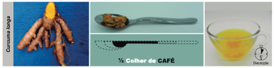

Clique em cada uma das plantas e conheça os seus benefícios.

Aquarius spp.

Curcuma longa

Harpagophytum spp.

Salix spp.

Solidago chilensis

Uncaria spp.

Varronia curassavica
Clique sobre os títulos
Curcuma longa
Informações gerais
Informações clínicas
Apresentações, Posologia e Advertências
Referências
VOLTAR AO MENU
INFORMAÇÕES GERAIS
Espécie (Família)
Curcuma longa L. (Zingiberaceae)1, 2.
Principais nomes populares
Açafrão-da-terra, falso-açafrão, cúrcuma, açafroa e gengibre amarelo1.
Principais sinonímias
Amomum curcuma Jacq., Curcuma domestica Valeton e Stissera curcuma
Raeusch2.
Partes utilizadas
Rizomas.
Principais constituintes químicos
Os curcuminoides são polifenois e principais constituintes (cerca de 70 a 80%) do rizoma. Dentre eles,
destaca-se a curcumina, o componente majoritário (cerca de 77%), seguido pela demetoxicurcumina (até
19%) e pela bisdemetoxicurcumina (até 6%)3. Os rizomas contêm ainda óleo essencial
(bisabolona, germacrona, α e β-zingibereno, curcumeno, p-cimeno, β-felandreno, terpinoleno,
p-cimen-8-ol, 1-8 cineol e borneol), diterpenoides, esteroides, sais minerais (Ca, Mg, Fe, P, Na, K),
carotenoides e polissacarídios (arabinogalactanos)4,5.

INFORMAÇÕES CLÍNICAS
Principais indicações
Dislipidemias6,7, tratamento e prevenção da aterosesclerose8–10, profilaxia de
doença coronariana e infarto agudo do miocárdio10.
Outras indicações
Dispepsias, cólicas, gases intestinais, colerético, colagogo e processos inflamatórios11. Na
uveíte crônica anterior, na doença inflamatória intestinal e em úlceras cutâneas12, infecções
das vias aéreas superiores, alergia respiratória (rinite alérgica e asma), síndromes demenciais, como
adjuvante no tratamento da depressão13–15, síndrome metabólica, e como nefroprotetora.
Ações farmacológicas
Biodisponibilidade dos curcuminoides
Muitos extratos disponíveis no mercado contém a mistura dos três principais curcuminoides, sendo a
curcumina o principal. Os estudos em animais e humanos mostram que a curcumina tem baixa absorção e que,
quanto mais purificada, menor a biodisponibilidade. Na tentativa de melhorar a biodisponibilidade, a
indústria farmacêutica tem buscado novas técnicas e formulações com a curcumina, que parecem fornecer
resultados mais efetivos. Na prática clínica, pode-se prescrever os produtos industrializados, extratos
altamente purificados com mais de 90% de curcuminoides [neste caso, associação com piperina ou
Piper
nigrum
(pimenta-do-reino) aumenta a biodisponibilidade], ou a droga vegetal (o fitocomplexo de C.
longa
aumenta a biodisponibilidade).
Ensaios clínicos
Ensaios clínicos e revisões sistemáticas com meta-análises têm comprovado a eficácia de C. longa
no
tratamento de asma, dispepsia e doença péptica, doença inflamatória intestinal, dismenorreia,
osteoartrite, úlceras crônicas, eczema (dermatite atópica), psoríase, transtornos depressivos, síndrome
metabólica, incluindo diabetes mellitus e hipertensão arterial, e como cardioprotetor, hepatoprotetor e
anti-inflamatório geral.
Publicações oficiais
APRESENTAÇÕES E POSOLOGIA
Observação: A piperina e a pimenta-do-reino aumentam a biodisponibilidade da
curcumina, sugerindo-se uma proporção de 1 mg de P. nigrum para 100 mg de extrato padronizado
de C. longa68, 110-112 ; ou uma dose de 10–15 mg/dia de extrato de P.
nigrum
padronizado em 90% de piperina,
quando se prescrevem extratos altamente purificados ou curcumina isolada.
*0,5 g de rizomas secos fragmentados corresponde aproximadamente a meia colher de café
caseira
Figura 1. Preparo do decocto de Curcuma longa.

Fonte: PEREIRA, A.M.S. et al.; 2020109.
Duração do uso
Não há dados na literatura, embora C. longa seja usada em alguns países por longos períodos.
Apresentações comerciais
Apresentações industrializadas registradas na ANVISA podem ser consultadas no endereço a seguir: https://consultas.anvisa.gov.br/#/medicamentos/.
Advertências
Contraindicado para portadores de cálculos biliares, obstrução dos ductos biliares ou úlcera
gastroduodenal e para pacientes em uso de anticoagulantes. Evitar exposição ao sol pois há relatos de
fotosssensibilidade7. Podem ocorrer sintomas leves, como boca seca, flatulência e irritação
gástrica6, ou até dermatite de contato, diarreia e dores abdominais nos primeiros dias de
ingestão7. A curcumina pode afetar a absorção de alguns β-bloqueadores e aumentar a absorção
do midazolam. Alguns autores recentemente afirmaram que os compostos da C. longa podem, em teoria, ser
tóxicos54. Entretanto, isto não foi demonstrado. Ao invés disso, a curcumina possui mínima
toxicidade e nenhum efeito colateral, até mesmo em doses elevadas (12 g/dia)3, 12, 13,
113–115.
Desta forma tem se mostrado uma droga de uso seguro116. Possíveis interações podem ocorrer
com anticoagulantes, agentes antiplaquetários, heparina de baixo peso molecular e agentes
trombolíticos108, além de anti-inflamatórios não-esteroidais7. Pode interferir com
a atividade dos antagonistas de receptores histamínicos do tipo 2 (ranitidina) e de bombas de prótons
(omeprazol), e aumentar o efeito hipoglicemiante dos antidiabéticos ou dos antilipêmicos7.
REFERÊNCIAS BIBLIOGRÁFICAS
1. Lorenzi H, Matos FJA. Plantas Medicinais no Brasil: Nativas e Exóticas. Nova Odessa: Instituto Plantarum; 2008.
2. POWO. Plants of the World Online. Facilitated by the Royal Botanic Gardens, Kew. Published on the Internet [Internet]. 2023 [citado 25 de dezembro de 2023]. Disponível em: http://www.plantsoftheworldonline.org/.
3. Patil BS, Jayaprakasha GK, Chidambara Murthy KN, Vikram A. Bioactive compounds: historical perspectives, opportunities, and challenges. J Agric Food Chem [Internet]. 2009/09/02. 23 de setembro de 2009 [citado 15 de julho de 2014];57(18):8142–60. Disponível em: http://www.ncbi.nlm.nih.gov/entrez/query.fcgi?cmd=Retrieve&db=PubMed&dopt=Citation&list_uids=19719126.
4. Saad GA, Léda PHO, Sá IM, Seixlack ACC. Fitoterapia Contemporânea: Tradição e Ciência na Prática Clínica. 2a ed. Rio de Janeiro: Guanabara Koogan; 2016. 444 p.
5. Pereira AMS, Bertoni BW, Jorge CR, Ferro D, Carmona F, Morel LJ de F, et al. Manual prático de multiplicação e colheita de plantas medicinais. São Paulo: Bertolucci; 2010. 280 p.
6. Chattopadhyay I, Biswas K, Bandyopadhyay U, Banerjee RK. Turmeric and curcumin: Biological actions and medicinal applications. Curr Sci. 2004;87(1):44–53.
7. Srivastava G, Mehta JL. Currying the heart: curcumin and cardioprotection. J Cardiovasc Pharmacol Ther. 2009;14(1):22–7.
8. Saad G de A, Léda PH de O, Sá IM, Seixlack AC de C. Fitoterapia Contemporânea - Tradição e Ciência na Prática Clínica. 3a edição. Rio de Janeiro: Guanabara Koogan; 2021. 1–578 p.
9. Salehi B, Stojanović-Radić Z, Matejić J, Sharifi-Rad M, Anil Kumar N V, Martins N, et al. The therapeutic potential of curcumin: A review of clinical trials. Eur J Med Chem [Internet]. fevereiro de 2019;163:527–45. Disponível em: http://www.ncbi.nlm.nih.gov/pubmed/30553144.
10. Alonso J. Tratado de Fitofármacos e Nutracêuticos. São Paulo: AC Farmacêutica; 2015. 1124.
11. BRASIL. Formulário de Fitoterápicos da Farmacopeia Brasileira. 2a. Brasília: Agência Nacional de Vigilância Sanitária (ANVISA); 2021. 223 p.
12. Micromedex [Internet]. Turmeric [Internet]. AltMedDex. 2017 [citado 29 de abril de 2017]. Disponível em: http://psbe.ufrn.br/.
13. Lopresti AL, Maes M, Meddens MJM, Maker GL, Arnoldussen E, Drummond PD. Curcumin and major depression: A randomised, double-blind, placebo-controlled trial investigating the potential of peripheral biomarkers to predict treatment response and antidepressant mechanisms of change. European Neuropsychopharmacology [Internet]. 2015;25(1):38–50. Disponível em: http://dx.doi.org/10.1016/j.euroneuro.2014.11.015. Lopresti AL, Maes M, Maker GL, Hood SD, Drummond PD. Curcumin for the treatment of major depression: A randomised, double-blind, placebo controlled study. J Affect Disord [Internet]. 2014;167:368–75. Disponível em: http://dx.doi.org/10.1016/j.jad.2014.06.001.
15. Lopresti AL, Drummond PD. Efficacy of curcumin, and a saffron/curcumin combination for the treatment of major depression: A randomised, double-blind, placebo-controlled study. J Affect Disord. 2017;207(August 2016):188–96.
16. Jagetia GC, Aggarwal BB. “Spicing up” of the immune system by curcumin. J Clin Immunol. 2007;27(1):19–35.
17. Wongcharoen W, Phrommintikul A. The protective role of curcumin in cardiovascular diseases. Int J Cardiol [Internet]. 2009;133(2):145–51. Disponível em: http://dx.doi.org/10.1016/j.ijcard.2009.01.073.
18. Jurenka JS. Anti-inflammatory properties of curcumin, a major constituent of Curcuma longa: a review of preclinical and clinical research. Altern Med Rev [Internet]. 2009;14(2):141–53. Disponível em: http://eutils.ncbi.nlm.nih.gov/entrez/eutils/elink.fcgi?dbfrom=pubmed&id=19594223&retmode=ref&cmd=prlinks.
19. Yeh CH, Chen TP, Wu YC, Lin YM, Jing Lin P. Inhibition of NFkappaB activation with curcumin attenuates plasma inflammatory cytokines surge and cardiomyocytic apoptosis following cardiac ischemia/reperfusion. J Surg Res. 2005;125(1):109–16.
20. González-Salazar A, Molina-Jijón E, Correa F, Zarco-Márquez G, Calderón-Oliver M, Tapia E, et al. Curcumin Protects from Cardiac Reperfusion Damage by Attenuation of Oxidant Stress and Mitochondrial Dysfunction. Cardiovasc Toxicol [Internet]. 2011;11(4):357–64. Disponível em: http://www.springerlink.com/index/10.1007/s12012-011-9128-9.
21. Fiorillo C, Becatti M, Pensalfini A, Cecchi C, Lanzilao L, Donzelli G, et al. Curcumin protects cardiac cells against ischemia-reperfusion injury: effects on oxidative stress, NF-κB, and JNK pathways. Free Radic Biol Med. outubro de 2008;45(6):839–46.
22. Naghsh N, Musazadeh V, Nikpayam O, Kavyani Z, Moridpour AH, Golandam F, et al. Profiling Inflammatory Biomarkers following Curcumin Supplementation: An Umbrella Meta-Analysis of Randomized Clinical Trials. Evidence-Based Complementary and Alternative Medicine. 16 de janeiro de 2023;2023:1–12.
23. Kim YS, Ahn Y, Hong MH, Joo SY, Kim KH, Sohn IS, et al. Curcumin attenuates inflammatory responses of TNF-alpha-stimulated human endothelial cells. J Cardiovasc Pharmacol. 2007;50(1):41–9.
24. Chaney MA. Corticosteroids and cardiopulmonary bypass: a review of clinical investigations. Chest [Internet]. março de 2002;121(3):921–31. Disponível em: http://www.ncbi.nlm.nih.gov/pubmed/11888978.
25. Karaman M, Firinci F, Cilaker S, Uysal P, Tugyan K, Yilmaz O, et al. Anti-inflammatory effects of curcumin in a murine model of chronic asthma. Allergol Immunopathol (Madr) [Internet]. 2012;40(4):210–4. Disponível em: http://eutils.ncbi.nlm.nih.gov/entrez/eutils/elink.fcgi?dbfrom=pubmed&id=21862198&retmode=ref&cmd=prlinks.
26. Oh SWW, Cha JYY, Jung JEE, Chang BCC, Kwon HJJ, Lee BRR, et al. Curcumin attenuates allergic airway inflammation and hyper-responsiveness in mice through NF-kappaB inhibition. J Ethnopharmacol [Internet]. 14 de julho de 2011 [citado 30 de julho de 2014];136(3):414–21. Disponível em: http://www.ncbi.nlm.nih.gov/pubmed/20643202.
27. Ram A, Das M, Ghosh B. Curcumin attenuates allergen-induced airway hyperresponsiveness in sensitized guinea pigs. Biol Pharm Bull [Internet]. julho de 2003;26(7):1021–4. Disponível em: http://www.ncbi.nlm.nih.gov/pubmed/12843631.
28. Morimoto T, Sunagawa Y, Fujita M, Hasegawa K. Novel Heart Failure Therapy Targeting Transcriptional Pathway in Cardiomyocytes by a Natural Compound, Curcumin. Circ J [Internet]. 2010;74(6):1059–66. Disponível em: http://joi.jlc.jst.go.jp/JST.JSTAGE/circj/CJ-09-1012?from=CrossRef.
29. Cheng H, Liu W, Ai X. [Protective effect of curcumin on myocardial ischemia reperfusion injury in rats]. Zhong Yao Cai [Internet]. outubro de 2005;28(10):920–2. Disponível em: http://www.ncbi.nlm.nih.gov/pubmed/16479932.
30. Yeh CH, Lin YM, Wu YC, Jing Lin P. Inhibition of NF-kappa B activation can attenuate ischemia/reperfusion-induced contractility impairment via decreasing cardiomyocytic proinflammatory gene up-regulation and matrix metalloproteinase expression. J Cardiovasc Pharmacol. 2005;45(4):301–9.
31. Naik SR, Thakare VN, Patil SR. Protective effect of curcumin on experimentally induced inflammation, hepatotoxicity and cardiotoxicity in rats Evidence of its antioxidant property. Exp Toxicol Pathol [Internet]. 2010;1–13. Disponível em: http://dx.doi.org/10.1016/j.etp.2010.03.001.
32. Nirmala C, Puvanakrishnan R. Effect of curcumin on certain lysosomal hydrolases in isoproterenol-induced myocardial infarction in rats. Biochem Pharmacol. 1996;51(1):47–51.
33. Hong D, Zeng X, Xu W, Ma J, Tong Y, Chen Y. Altered profiles of gene expression in curcumin-treated rats with experimentally induced myocardial infarction. Pharmacol Res. 2010;61(2):142–8.
34. Nirmala C, Anand S, Puvanakrishnan R. Curcumin treatment modulates collagen metabolism in isoproterenol induced myocardial necrosis in rats. Mol Cell Biochem. 1999;197(1–2):31–7.
35. Nazam Ansari M, Bhandari U, Pillai KK. Protective role of curcumin in myocardial oxidative damage induced by isoproterenol in rats. Hum Exp Toxicol. 2007;26(12):933–8.
36. Tanwar V, Sachdeva J, Golechha M, Kumari S, Arya DS. Curcumin protects rat myocardium against isoproterenol-induced ischemic injury: attenuation of ventricular dysfunction through increased expression of Hsp27 along with strengthening antioxidant defense system. J Cardiovasc Pharmacol. 2010;55(4):377–84.
37. Tanwar V, Sachdeva J, Kishore K, Mittal R, Nag TC, Ray R, et al. Dose-dependent actions of curcumin in experimentally induced myocardial necrosis: a biochemical, histopathological, and electron microscopic evidence. Cell Biochem Funct. 2010;28(1):74–82.
38. Venkatesan N. Curcumin attenuation of acute adriamycin myocardial toxicity in rats. Br J Pharmacol [Internet]. junho de 1998;124(3):425–7. Disponível em: http://www.pubmedcentral.nih.gov/articlerender.fcgi?artid=1565424&tool=pmcentrez&rendertype=abstract.
39. Venkatesan N, Punithavathi D, Arumugam V. Curcumin prevents adriamycin nephrotoxicity in rats. Br J Pharmacol. 2000;129(2):231–4.
40. Mohamad RH, El-Bastawesy AM, Zekry ZK, Al-Mehdar HA, Al-Said MGAM, Aly SS, et al. The role of Curcuma longa against doxorubicin (adriamycin)-induced toxicity in rats. J Med Food [Internet]. abril de 2009 [citado 20 de janeiro de 2014];12(2):394–402. Disponível em: http://www.ncbi.nlm.nih.gov/pubmed/19459743.
41. Sompamit K, Kukongviriyapan U, Nakmareong S, Pannangpetch P, Kukongviriyapan V. Curcumin improves vascular function and alleviates oxidative stress in non-lethal lipopolysaccharide-induced endotoxaemia in mice. Eur J Pharmacol [Internet]. 2009;616(1–3):192–9. Disponível em: http://dx.doi.org/10.1016/j.ejphar.2009.06.014.
42. Zhang Y, Lin G sheng, Bao M wei, Wu X ying, Wang C, Yang B. [Effects of curcumin on sarcoplasmic reticulum Ca2+-ATPase in rabbits with heart failure]. Zhonghua Xin Xue Guan Bing Za Zhi [Internet]. abril de 2010;38(4):369–73. Disponível em: http://www.ncbi.nlm.nih.gov/pubmed/20654087.
43. Ahmad-Raus RR, Abdul-Latif ESE, Mohammad JJ. Lowering of lipid composition in aorta of guinea pigs by Curcuma domestica. BMC Complement Altern Med. 24 de dezembro de 2001;1(1):6.
44. Niranjan A, Prakash D. Chemical constituents and biological activities of turmeric (Curcuma longa L.) - A review. Article in Journal of Food Science and Technology-Mysore [Internet]. 2008;45(2):109–16. Disponível em: https://www.researchgate.net/publication/283863862.
45. Ejaz A, Wu D, Kwan P, Meydani M. Curcumin inhibits adipogenesis in 3T3-L1 adipocytes and angiogenesis and obesity in C57/BL mice. J Nutr [Internet]. 2009 [citado 30 de dezembro de 2014];919–25. Disponível em: http://jn.nutrition.org/content/139/5/919.short.
46. Elgazar AF, AboRaya AO. Nephroprotective and Diuretic Effects of Three Medicinal Herbs Against Gentamicin-Induced Nephrotoxicity in Male Rats. Pakistan Journal of Nutrition [Internet]. 1o de agosto de 2013;12(8):715–22. Disponível em: http://www.scialert.net/abstract/?doi=pjn.2013.715.722.
47. Pathak N, Rajurkar S, Tarekh S, Badgire V. Nephroprotective Effects of Carvedilol and Curcuma longa against Cisplatin-Induced Nephrotoxicity in Rats. Asian J Med Sci [Internet]. 11 de dezembro de 2013;5(2):91–8. Disponível em: http://www.nepjol.info/index.php/AJMS/article/view/5483.
48. Sharma S, Kulkarni SK, Chopra K. Curcumin, the active principle of turmeric (Curcuma longa), ameliorates diabetic nephropathy in rats. Clin Exp Pharmacol Physiol [Internet]. outubro de 2006 [citado 30 de julho de 2014];33(10):940–5. Disponível em: http://www.ncbi.nlm.nih.gov/pubmed/17002671.
49. Zhong F, Chen H, Han L, Jin Y, Wang W. Curcumin attenuates lipopolysaccharide-induced renal inflammation. Biol Pharm Bull [Internet]. janeiro de 2011;34(2):226–32. Disponível em: http://www.ncbi.nlm.nih.gov/pubmed/21415532.
50. Rathore P, Dohare P, Varma S, Ray A, Sharma U, Jaganathanan NR, et al. Curcuma Oil: Reduces Early Accumulation of Oxidative Product and is Anti-apoptogenic in Transient Focal Ischemia in Rat Brain. Neurochem Res. 23 de setembro de 2008;33(9):1672–82.
51. Lim GP, Chu T, Yang F, Beech W, Frautschy S a, Cole GM. The curry spice curcumin reduces oxidative damage and amyloid pathology in an Alzheimer transgenic mouse. J Neurosci. 2001;21(21):8370–7.
52. Yang F, Lim GP, Begum AN, Ubeda OJ, Simmons MR, Ambegaokar SS, et al. Curcumin inhibits formation of amyloid β oligomers and fibrils, binds plaques, and reduces amyloid in vivo. Journal of Biological Chemistry. 2005;280(7):5892–901.
53. Yu SY, Zhang M, Luo J, Zhang L, Shao Y, Li G. Curcumin ameliorates memory deficits via neuronal nitric oxide synthase in aged mice. Prog Neuropsychopharmacol Biol Psychiatry [Internet]. 2013;45:47–53. Disponível em: http://dx.doi.org/10.1016/j.pnpbp.2013.05.001.
54. Shoba G, Joy D, Joseph T, Majeed M, Rajendran R, Srinivas P. Influence of Piperine on the Pharmacokinetics of Curcumin in Animals and Human Volunteers. Planta Med. 4 de maio de 1998;64(04):353–6.
55. Jamwal R. Bioavailable curcumin formulations: A review of pharmacokinetic studies in healthy volunteers. J Integr Med [Internet]. 2018;16(6):367–74. Disponível em: https://doi.org/10.1016/j.joim.2018.07.001.
56. Kiefer D. Novel Turmeric Compound Delivers Much More Curcumin to the Blood [Internet]. Life Extension Magazine. 2007 [citado 20 de janeiro de 2017]. p. 1–2. Disponível em: http://www.lef.org/magazine/2007/10/report_curcumin/Page-01.
57. Martin RCG, Aiyer HS, Malik D, Li Y. Effect on pro-inflammatory and antioxidant genes and bioavailable distribution of whole turmeric vs curcumin: Similar root but different effects. Food Chem Toxicol [Internet]. fevereiro de 2012;50(2):227–31. Disponível em: http://www.ncbi.nlm.nih.gov/pubmed/22079310.
58. Balaji S, Chempakam B. Toxicity prediction of compounds from turmeric (Curcuma longa L). Food Chem Toxicol [Internet]. outubro de 2010;48(10):2951–9. Disponível em: http://dx.doi.org/10.1016/j.fct.2010.07.032.
59. Krishnakumar IM, Kumar D, Ninan E, Kuttan R, Maliakel B. Enhanced absorption and pharmacokinetics of fresh turmeric (Curcuma Longa L) derived curcuminoids in comparison with the standard curcumin from dried rhizomes. J Funct Foods. 1o de agosto de 2015;17:55–65.
60. Manarin G, Anderson D, Silva JM e, Coppede J da S, Roxo-Junior P, Pereira AMS, et al. Curcuma longa L. ameliorates asthma control in children and adolescents: A randomized, double-blind, controlled trial. J Ethnopharmacol [Internet]. 2019;238(April):111882. Disponível em: https://linkinghub.elsevier.com/retrieve/pii/S0378874118340303.
61. Kim DH, Phillips JF, Lockey RF. Oral curcumin supplementation in patients with atopic asthma. Allergy Rhinol (Providence) [Internet]. 2011;2(2):e51-3. Disponível em: http://eutils.ncbi.nlm.nih.gov/entrez/eutils/elink.fcgi?dbfrom=pubmed&id=22852117&retmode=ref&cmd=prlinks.
62. Wongcharoen W, Jai-Aue S, Phrommintikul A, Nawarawong W, Woragidpoonpol S, Tepsuwan T, et al. Effects of curcuminoids on frequency of acute myocardial infarction after coronary artery bypass grafting. Am J Cardiol [Internet]. 1o de julho de 2012 [citado 4 de abril de 2014];110(1):40–4. Disponível em: http://www.ncbi.nlm.nih.gov/pubmed/22481014.
63. Sukardi R, Sastroasmoro S, Siregar NC, Djer MM, Suyatna FD, Sadikin M, et al. The role of curcumin as an inhibitor of oxidative stress caused by ischaemia re-perfusion injury in tetralogy of Fallot patients undergoing corrective surgery. Cardiol Young. 2015;1–8.
64. Thamlikitkul V, Bunyapraphatsara N, Dechatiwongse T, Theerapong S, Chantrakul C, Thanaveerasuwan T, et al. Randomized double blind study of Curcuma domestica Val. for dyspepsia. J Med Assoc Thai [Internet]. novembro de 1989;72(11):613–20. Disponível em: http://www.ncbi.nlm.nih.gov/pubmed/2699615.
65. Gruenwald J, Brendler T, Jaenicke C. Physician’s Desk Reference (PDR) for Herbal Medicines. 4th ed. Connecticut: Thomson; 2007. 1034 p.
66. Khonche A, Biglarian O, Panahi Y, Valizadegan G, Soflaei SS, Ghamarchehreh ME, et al. Adjunctive Therapy with Curcumin for Peptic Ulcer: a Randomized Controlled Trial. Drug Res [Internet]. agosto de 2016;66(8):444–8. Disponível em: http://www.ncbi.nlm.nih.gov/pubmed/27351245.
67. Yongwatana K, Harinwan K, Chirapongsathorn S, Opuchar K, Sanpajit T, Piyanirun W, et al. Curcuma longa Linn versus omeprazole in treatment of functional dyspepsia: A randomized, double‐blind, placebo‐controlled trial. J Gastroenterol Hepatol. 2 de fevereiro de 2022;37(2):335–41.
68. DE CERQUEIRA ALVES M, OLIVEIRA SANTOS M, BEZERRA BUENO N, ROBERTO PIMENTEL DE ARA贘O O, OLIVEIRA FONSECA GOULART M, ANDR葢 MOURA F. Efficacy of oral consumption of curcumin/ for symptom improvement in inflammatory bowel disease: A systematic review of animal models and a meta-analysis of randomized clinical trials. BIOCELL. 2022;46(9):2015–47.
69. Hesami S, kavianpour M, Rashidi Nooshabadi M, Yousefi M, Lalooha F, Khadem Haghighian H. Randomized, double-blind, placebo-controlled clinical trial studying the effects of Turmeric in combination with mefenamic acid in patients with primary dysmenorrhoea. J Gynecol Obstet Hum Reprod. abril de 2021;50(4):101840.
70. Dragos D, Gilca M, Gaman L, Vlad A, Iosif L, Stoian I, et al. Phytomedicine in Joint Disorders. Nutrients [Internet]. 2017;9(1):70. Disponível em: http://www.mdpi.com/2072-6643/9/1/70.
71. Zeng L, Yang T, Yang K, Yu G, Li J, Xiang W, et al. Efficacy and Safety of Curcumin and Curcuma longa Extract in the Treatment of Arthritis: A Systematic Review and Meta-Analysis of Randomized Controlled Trial. Front Immunol. 22 de julho de 2022;13.
72. Sidhu GS, Singh AK, Thaloor D, Banaudha KK, Patnaik GK, Srimal RC, et al. Enhancement of wound healing by curcumin in animals. Wound repair and regeneration [Internet]. janeiro de 1998 [citado 10 de julho de 2015];6(2):167–77. Disponível em: http://www.ncbi.nlm.nih.gov/pubmed/9776860.
73. Akbik D, Ghadiri M, Chrzanowski W, Rohanizadeh R. Curcumin as a wound healing agent. Life Sci [Internet]. 22 de outubro de 2014 [citado 10 de julho de 2015];116(1):1–7. Disponível em: http://www.ncbi.nlm.nih.gov/pubmed/25200875.
74. Khiljee S, Rehman N, Khiljee T, Loebenberg R, Ahmad RS. Formulation and clinical evaluation of topical dosage forms of Indian Penny Wort, walnut and turmeric in eczema. Pak J Pharm Sci [Internet]. novembro de 2015;28(6):2001–7. Disponível em: http://www.ncbi.nlm.nih.gov/pubmed/26639477.
75. Arora N, Shah K, Pandey-Rai S. Inhibition of imiquimod-induced psoriasis-like dermatitis in mice by herbal extracts from some Indian medicinal plants. Protoplasma. maio de 2015;
76. Nguyen TA, Friedman AJ. Curcumin: a novel treatment for skin-related disorders. J Drugs Dermatol [Internet]. outubro de 2013 [citado 10 de julho de 2015];12(10):1131–7. Disponível em: http://www.ncbi.nlm.nih.gov/pubmed/24085048.
77. Antiga E, Bonciolini V, Volpi W, Del Bianco E, Caproni M. Oral Curcumin (Meriva) Is Effective as an Adjuvant Treatment and Is Able to Reduce IL-22 Serum Levels in Patients with Psoriasis Vulgaris. Biomed Res Int [Internet]. 2015;2015:1–7. Disponível em: http://www.hindawi.com/journals/bmri/2015/283634/.
78. Sarafian G, Afshar M, Mansouri P, Asgarpanah J, Raoufinejad K, Rajabi M. Topical Turmeric Microemulgel in the Management of Plaque Psoriasis; A Clinical Evaluation. Iran J Pharm Res [Internet]. 2015;14(3):865–76. Disponível em: http://www.ncbi.nlm.nih.gov/pubmed/26330875.
79. Al-Karawi D, Mamoori DA Al, Al Mamoori DA, Tayyar Y. The role of curcumin administration in patients with major depressive disorder: mini meta-analysis of clinical trials. Phytotherapy research [Internet]. 2016;183(October 2015):175–83. Disponível em: http://www.ncbi.nlm.nih.gov/pubmed/26610378.
80. Yu JJ, Pei LB, Zhang Y, Wen ZY, Yang JL. Chronic Supplementation of Curcumin Enhances the Efficacy of Antidepressants in Major Depressive Disorder: A Randomized, Double-Blind, Placebo-Controlled Pilot Study. J Clin Psychopharmacol [Internet]. agosto de 2015;35(4):406–10. Disponível em: http://www.ncbi.nlm.nih.gov/pubmed/26066335.
81. Khajehdehi P, Zanjaninejad B, Aflaki E, Nazarinia MA, Azad F, Malekmakan L, et al. Oral Supplementation of Turmeric Decreases Proteinuria, Hematuria, and Systolic Blood Pressure in Patients Suffering From Relapsing or Refractory Lupus Nephritis: A Randomized and Placebo-controlled Study. Journal of Renal Nutrition. 2012;22(1):50–7.
82. Moreillon JJ, Bowden RG, Deike E, Griggs J, Wilson R, Shelmadine B, et al. The use of an anti-inflammatory supplement in patients with chronic kidney disease. J Complement Integr Med [Internet]. 1o de julho de 2013;10. Disponível em: http://www.ncbi.nlm.nih.gov/pubmed/23828329.
83. Usharani P, Mateen AA, Naidu MUR, Raju YSN, Chandra N. Effect of NCB-02, atorvastatin and placebo on endothelial function, oxidative stress and inflammatory markers in patients with type 2 diabetes mellitus: a randomized, parallel-group, placebo-controlled, 8-week study. Drugs R D [Internet]. 2008;9(4):243–50. Disponível em: http://www.ncbi.nlm.nih.gov/pubmed/18588355.
84. Khajehdehi P, Pakfetrat M, Javidnia K, Azad F, Malekmakan L, Nasab MH, et al. Oral supplementation of turmeric attenuates proteinuria, transforming growth factor-β and interleukin-8 levels in patients with overt type 2 diabetic nephropathy: A randomized, double-blind and placebo-controlled study. Scand J Urol Nephrol [Internet]. 31 de novembro de 2011;45(5):365–70. Disponível em: http://www.tandfonline.com/doi/full/10.3109/00365599.2011.585622.
85. Mohammadi A, Sahebkar A, Iranshahi M, Amini M, Khojasteh R, Ghayour-Mobarhan M, et al. Effects of Supplementation with Curcuminoids on Dyslipidemia in Obese Patients: A Randomized Crossover Trial. Phytotherapy Research [Internet]. março de 2013;27(3):374–9. Disponível em: http://doi.wiley.com/10.1002/ptr.4715.
86. Na LX, Li Y, Pan HZ, Zhou XL, Sun DJ, Meng M, et al. Curcuminoids exert glucose-lowering effect in type 2 diabetes by decreasing serum free fatty acids: a double-blind, placebo-controlled trial. Mol Nutr Food Res [Internet]. setembro de 2013;57(9):1569–77. Disponível em: http://doi.wiley.com/10.1002/mnfr.201200131.
87. Chuengsamarn S, Rattanamongkolgul S, Phonrat B, Tungtrongchitr R, Jirawatnotai S. Reduction of atherogenic risk in patients with type 2 diabetes by curcuminoid extract: a randomized controlled trial. J Nutr Biochem. fevereiro de 2014;25(2):144–50.
88. Panahi Y, Khalili N, Hosseini MS, Abbasinazari M, Sahebkar A. Lipid-modifying effects of adjunctive therapy with curcuminoids–piperine combination in patients with metabolic syndrome: Results of a randomized controlled trial. Complement Ther Med [Internet]. outubro de 2014;22(5):851–7. Disponível em: http://linkinghub.elsevier.com/retrieve/pii/S0965229914001149.
89. Na LX, Yan BL, Jiang S, Cui HL, Li Y, Sun CH. Curcuminoids Target Decreasing Serum Adipocyte-fatty Acid Binding Protein Levels in Their Glucose-lowering Effect in Patients with Type 2 Diabetes. Biomed Environ Sci [Internet]. novembro de 2014;27(11):902–6. Disponível em: http://www.ncbi.nlm.nih.gov/pubmed/25374024.
90. Panahi Y, Hosseini MS, Khalili N, Naimi E, Simental-Mendía LE, Majeed M, et al. Effects of curcumin on serum cytokine concentrations in subjects with metabolic syndrome: A post-hoc analysis of a randomized controlled trial. Biomedicine & Pharmacotherapy [Internet]. agosto de 2016;82:578–82. Disponível em: http://linkinghub.elsevier.com/retrieve/pii/S0753332216303997.
91. Di Pierro F, Bressan A, Ranaldi D, Rapacioli G, Giacomelli L, Bertuccioli A. Potential role of bioavailable curcumin in weight loss and omental adipose tissue decrease: preliminary data of a randomized, controlled trial in overweight people with metabolic syndrome. Preliminary study. Eur Rev Med Pharmacol Sci [Internet]. novembro de 2015;19(21):4195–202. Disponível em: http://www.ncbi.nlm.nih.gov/pubmed/26592847.
92. Panahi Y, Hosseini MS, Khalili N, Naimi E, Majeed M, Sahebkar A. Antioxidant and anti-inflammatory effects of curcuminoid-piperine combination in subjects with metabolic syndrome: A randomized controlled trial and an updated meta-analysis. Clinical Nutrition [Internet]. dezembro de 2015;34(6):1101–8. Disponível em: http://linkinghub.elsevier.com/retrieve/pii/S0261561415000023.
93. Yang H, Xu W, Zhou Z, Liu J, Li X, Chen L, et al. Curcumin Attenuates Urinary Excretion of Albumin in Type II Diabetic Patients with Enhancing Nuclear Factor Erythroid-Derived 2-Like 2 (Nrf2) System and Repressing Inflammatory Signaling Efficacies. Experimental and Clinical Endocrinology & Diabetes [Internet]. 14 de abril de 2015;123(06):360–7. Disponível em: http://www.thieme-connect.de/DOI/DOI?10.1055/s-0035-1545345.
94. Yang YS, Su YF, Yang HW, Lee YH, Chou JI, Ueng KC. Lipid-Lowering Effects of Curcumin in Patients with Metabolic Syndrome: A Randomized, Double-Blind, Placebo-Controlled Trial. Phytotherapy Research [Internet]. dezembro de 2014;28(12):1770–7. Disponível em: http://doi.wiley.com/10.1002/ptr.5197.
95. Chuengsamarn S, Rattanamongkolgul S, Luechapudiporn R, Phisalaphong C, Jirawatnotai S. Curcumin Extract for Prevention of Type 2 Diabetes. Diabetes Care [Internet]. 1o de novembro de 2012;35(11):2121–7. Disponível em: http://care.diabetesjournals.org/cgi/doi/10.2337/dc12-0116.
96. Dehzad MJ, Ghalandari H, Nouri M, Askarpour M. Effects of curcumin/turmeric supplementation on glycemic indices in adults: A grade-assessed systematic review and dose–response meta-analysis of randomized controlled trials. Diabetes & Metabolic Syndrome: Clinical Research & Reviews. outubro de 2023;17(10):102855.
97. Pathomwichaiwat T, Jinatongthai P, Prommasut N, Ampornwong K, Rattanavipanon W, Nathisuwan S, et al. Effects of turmeric (Curcuma longa) supplementation on glucose metabolism in diabetes mellitus and metabolic syndrome: An umbrella review and updated meta-analysis. PLoS One. 20 de julho de 2023;18(7):e0288997.
98. Dehzad MJ, Ghalandari H, Amini MR, Askarpour M. Effects of curcumin/turmeric supplementation on lipid profile: A GRADE-assessed systematic review and dose–response meta-analysis of randomized controlled trials. Complement Ther Med. agosto de 2023;75:102955.
99. Dehzad MJ, Ghalandari H, Nouri M, Askarpour M. Effects of curcumin/turmeric supplementation on obesity indices and adipokines in adults: A grade‐assessed systematic review and dose–response meta‐analysis of randomized controlled trials. Phytotherapy Research. 7 de abril de 2023;37(4):1703–28.
100. Molani‐Gol R, Dehghani A, Rafraf M. Effects of curcumin/turmeric supplementation on the liver enzymes, lipid profiles, glycemic index, and anthropometric indices in non‐alcoholic fatty liver patients: An umbrella meta‐analysis. Phytotherapy Research. 2 de novembro de 2023;
101. Dehzad MJ, Ghalandari H, Askarpour M. Curcumin/turmeric supplementation could improve blood pressure and endothelial function: A grade-assessed systematic review and dose–response meta-analysis of randomized controlled trials. Clin Nutr ESPEN. fevereiro de 2024;59:194–207.
102. Dehzad MJ, Ghalandari H, Amini MR, Askarpour M. Effects of curcumin/turmeric supplementation on liver function in adults: A GRADE-assessed systematic review and dose–response meta-analysis of randomized controlled trials. Complement Ther Med. junho de 2023;74:102952.
103. Dehzad MJ, Ghalandari H, Nouri M, Askarpour M. Antioxidant and anti-inflammatory effects of curcumin/turmeric supplementation in adults: A GRADE-assessed systematic review and dose–response meta-analysis of randomized controlled trials. Cytokine. abril de 2023;164:156144.
104. Zeng L, Yang T, Yang K, Yu G, Li J, Xiang W, et al. Curcumin and Curcuma longa Extract in the Treatment of 10 Types of Autoimmune Diseases: A Systematic Review and Meta-Analysis of 31 Randomized Controlled Trials. Front Immunol. 1o de agosto de 2022;13.
105. Brasil, Ministério da Saúde, Secretaria de Ciência Tecnologia Inovação e Complexo da Saúde, Departamento de Assistência Farmacêutica e Insumos Estratégicos. Curcuma longa L., Zingiberaceae – Açafrão-da-terra [Internet]. Informações Sistematizadas da Relação Nacional de Plantas Medicinais de Interesse ao SUS. Brasília: Ministério da Saúde; 2020 [citado 7 de janeiro de 2024]. p. 182. Disponível em: https://bvsms.saude.gov.br/bvs/publicacoes/informacoes_sistematizadas_relacao_curcuma_longa.pdf.
106. Pereira AMS, Bertoni BW, Silva CCM, Ferro D, Carmona F, Cestari IM, et al. Formulário Fitoterápico da Farmácia da Natureza. 3a. São Paulo: Bertolucci; 2020. 465 p.
107. Pereira AMS, Bertoni BW, Silva CCM, Ferro D, Carmona F, Tardelli FC, et al. Formulário de Preparação Extemporânea da Farmácia da Natureza. 2a. São Paulo: Bertolucci; 2020. 263 p.
108. Williamsom E, Driver S, Baxter K. Interações Medicamentosas de Stockley: plantas medicinais e medicamentos fitoterápicos. Porto Alegre: Artmed; 2012. 440 p.
109. Boonrueng P, Wasana PWD, Hasriadi, Vajragupta O, Rojsitthisak P, Towiwat P. Combination of curcumin and piperine synergistically improves pain-like behaviors in mouse models of pain with no potential CNS side effects. Chin Med. 23 de outubro de 2022;17(1):119.
110. Setyaningsih D, Santoso YA, Hartini YS, Murti YB, Hinrichs WLJ, Patramurti C. Isocratic high-performance liquid chromatography (HPLC) for simultaneous quantification of curcumin and piperine in a microparticle formulation containing Curcuma longa and Piper nigrum. Heliyon. março de 2021;7(3):e06541.
111. Bisht S, Maitra A. Systemic delivery of curcumin: 21st century solutions for an ancient conundrum. Curr Drug Discov Technol [Internet]. setembro de 2009;6(3):192–9. Disponível em: http://www.ncbi.nlm.nih.gov/pubmed/19496751.
112. Blumenthal M. The Complete German Commission E Monographs: Therapeutic Guide to Herbal Medicines. 1st ed. Massachusetts: American Botanical Council; 1998.
113. Krishnaraju A V, Sundararaju D, Sengupta K, Venkateswarlu S, Trimurtulu G. Safety and toxicological evaluation of demethylatedcurcuminoids; a novel standardized curcumin product. Toxicol Mech Methods. 2009;19(6–7):447–60.
114. Bengmark S. Curcumin, an atoxic antioxidant and natural NF kappa B, cyclooxygenase-2, lipooxygenase, and inducible nitric oxide synthase inhibitor: A shield against acute and chronic diseases. JPEN J Parenter Enteral Nutr [Internet]. 2006;30(1):45–51. Disponível em: http://www.ncbi.nlm.nih.gov/pubmed/16387899.
Clique sobre os títulos
Aquarius spp.
Informações gerais
Informações clínicas
Apresentações, Posologia e Advertências
Referências
VOLTAR AO MENU
INFORMAÇÕES GERAIS
Espécies (Família)
Aquarius grandiflorus (Cham. & Schltdl.) Christenh. & Byng e Aquarius macrophyllus (Kunth)
Christenh. & Byng (Alismataceae)1,2.
Principais nomes populares
Chapéu-de-couro e chá-mineiro1.
Principais sinonímias
Para A. grandiflorus:
Echinodorus grandiflorus (Cham. & Schltdl.) Micheli e Alisma grandiflorum Cham. &
Schltdl2.
Para A. macrophyllus:
Echinodorus macrophyllus (Kunth) Micheli e Alisma macrophyllum Kunth2.
Partes utilizadas
Folhas.
Principais constituintes químicos
Compostos fenólicos: ácidos fenólicos simples (ferúlico, isoferúlico, cafeico, o-hidroxicinâmico) e
ácidos fenólicos conjugados (chicórico e caftárico); cumarinas; taninos; flavonoides e derivados
(isoorientina, vitexina, isovitexina, isoorientina-7,3’-dimetil-eter); xantonas (svertisina,
svertiajaponina); terpenoides: óleo essencial contendo monoterpenos (linalol) e sesquiterpenos
(E-cariofileno, E-nerolidol), diterpenoides (labdano, cembrano e fitol), esteroides, heterosídeos
cardiotônicos, saponinas; alcaloides (echinofilina-A); ácidos graxos (ácidos linoleico e dodecanoico); e
resinas3–5.
INFORMAÇÕES CLÍNICAS
Principais indicações
Artrite gotosa
Osteoartrite (osteoartrose)
Condições inflamatórias idiopáticas
Outras indicações
Litíase de vias urinárias, como diurético leve e na hipertensão arterial3–5.
Ações farmacológicas
Anti-inflamatória
Analgésica
Diurética
Anti-hipertensiva
Ensaios clínicos
Não foram encontrados.
Publicações oficiais
Não consta.
APRESENTAÇÕES E POSOLOGIA
* 0,5 g da folha seca rasurada corresponde aproximadamente a uma colher de sopa caseira cheia (Figura 1).
Figura 1. Preparo do infuso de Echinodorus grandiflorus.

Fonte: PEREIRA, A.M.S. et al.; 202019.
Duração do uso
Não foram encontrados estudos na literatura. Tradicionalmente, Echinodorus spp. precisa ser usado
por períodos
relativamente longos. O tempo de tratamento deve ser suficiente para o controle dos sintomas, seguido de
uma retirada lenta e progressiva.
Apresentações comerciais
Apresentações industrializadas registradas na Agência Nacional de Vigilância Sanitária (Anvisa) podem
ser consultadas no endereço a seguir: https://consultas.anvisa.gov.br/#/medicamentos/.
Advertências
Contraindicado para gestantes, lactantes e crianças menores de 3 anos. Pode potencializar a ação de
medicamentos anti-hipertensivos. O extrato de Echinodorus spp. apresenta, dependendo da
concentração,
propriedade angiogênica ou antiangiogênica. O uso prolongado em doses elevadas pode causar aumento da
excreção de potássio e cálcio. Dosagem elevada também pode provocar diarreia19,20. Possui uma
quantidade significativa de iodo em sua composição, devendo haver cuidado ao se administrar a portadores
de
doenças da tireoide. Não foi encontrado registro de casos de superdosagem de Echinodorus spp. na
literatura
consultada. Estudos toxicológicos mostram que essa planta tem toxicidade muito baixa, sendo as doses
tóxicas muito superiores às doses terapêuticas21. Em caso de superdosagem, recomenda-se
apenas
hidratação oral e/ou parenteral, repouso, monitoramento laboratorial, com tratamento sintomático no caso
de identificação de quaisquer complicações.
Referências bibliográficas
1. Lorenzi H, Matos FJA. Plantas Medicinais no Brasil: Nativas e Exóticas. Nova Odessa: Instituto Plantarum; 2008.
2. POWO. Plants of the World Online. Facilitated by the Royal Botanic Gardens, Kew. Published on the Internet [Internet]. 2023 [citado 25 de dezembro de 2023]. Disponível em: http://www.plantsoftheworldonline.org/.
3. Saad G de A, Léda PH de O, Sá IM, Seixlack AC de C. Fitoterapia Contemporânea - Tradição e Ciência na Prática Clínica. 3a edição. Rio de Janeiro: Guanabara Koogan; 2021. 1–578 p.
4. Pereira AMS, Bertoni BW, Jorge CR, Ferro D, Carmona F, Morel LJ de F, et al. Manual prático de multiplicação e colheita de plantas medicinais. São Paulo: Bertolucci; 2010. 280 p.
5. Marques AM, Provance DW, Kaplan MAC, Figueiredo MR. Echinodorus grandiflorus: Ethnobotanical, phytochemical and pharmacological overview of a medicinal plant used in Brazil. Food and Chemical Toxicology. novembro de 2017;109:1032–47.
6. Pinto AC, Rego GCG, Siqueira AM, Cardoso CC, Reis PA, Marques EA, et al. Immunosuppressive effects of Echinodorus macrophyllus aqueous extract. J Ethnopharmacol [Internet]. 4 de maio de 2007;111(2):435–9. Disponível em: http://www.ncbi.nlm.nih.gov/pubmed/17293069.
7. De Oliveira DP, Garcia E de F, de Oliveira MA, Candido LCM, Coelho FM, Costa VV, et al. cis-Aconitic Acid, a Constituent of Echinodorus grandiflorus Leaves, Inhibits Antigen-Induced Arthritis and Gout in Mice. Planta Med. 11 de outubro de 2022;88(13):1123–31.
8. Tanus-Rangel E, Santos SR, Lima JCS, Lopes L, Noldin V, Monache FD, et al. Topical and Systemic Anti-Inflammatory Effects of Echinodorus macrophyllus (Kunth) Micheli (Alismataceae). J Med Food. outubro de 2010;13(5):1161–6.
9. Garcia E de F, de Oliveira MA, Godin AM, Ferreira WC, Bastos LFS, Coelho M de M, et al. Antiedematogenic activity and phytochemical composition of preparations from Echinodorus grandiflorus leaves. Phytomedicine. dezembro de 2010;18(1):80–6.
10. Da Silva GP, Fernandes DC, Vigliano MV, da Fonseca EN, Santos SVM, Marques PR, et al. Flavonoid-enriched fraction from Echinodorus macrophyllus aqueous extract exhibits high in-vitro and in-vivo anti-inflammatory activity. Journal of Pharmacy and Pharmacology. 16 de novembro de 2016;68(12):1584–96.
11. Silva GP da, Fernandes DC, Vigliano MV, Pinto FA, Fonseca EN da, Santos SVM, et al. Echinodorus macrophyllus: Hydroxycinnamoyl derivatives reduces neutrophil migration through modulation of cytokines, chemokines, and prostaglandin in the air-pouch model. J Ethnopharmacol. fevereiro de 2022;284:114757.
12. Garcia E, de Oliveira M, Dourado L, de Souza D, Teixeira M, Braga F. In Vitro TNF-α Inhibition Elicited by Extracts from Echinodorus grandiflorus Leaves and Correlation with Their Phytochemical Composition. Planta Med. 21 de dezembro de 2015;82(04):337–43.
13. Fernandes DC, Martins BP, Silva GP da, Fonseca EN da, Santos SVM, Velozo LSM, et al. Echinodorus macrophyllus fraction with a high level of flavonoid inhibits peripheral and central mechanisms of nociception. J Tradit Complement Med. março de 2022;12(2):123–30.
14. Lessa MA, Araújo CV, Kaplan MA, Pimenta D, Figueiredo MR, Tibiriçá E. Antihypertensive effects of crude extracts from leaves of Echinodorus grandiflorus. Fundam Clin Pharmacol. abril de 2008;22(2):161–8.
15. Tibiriçá E, Almeida A, Caillleaux S, Pimenta D, Kaplan MA, Lessa MA, et al. Pharmacological mechanisms involved in the vasodilator effects of extracts from Echinodorus grandiflorus. J Ethnopharmacol. abril de 2007;111(1):50–5.
16. Gasparotto FM, Palozi RAC, da Silva CHF, Pauli KB, Donadel G, Lourenço BHLB, et al. Antiatherosclerotic Properties of Echinodorus grandiflorus (Cham. & Schltdl.) Micheli: From Antioxidant and Lipid-Lowering Effects to an Anti-Inflammatory Role. J Med Food. 1o de setembro de 2019;22(9):919–27.
17. Gomes F, Marques AM, Nathalie O, Lessa MA, Tibiriçá E, Figueiredo MR, et al. Microvascular Effects of Echinodorus grandiflorus on Cardiovascular Disorders. Planta Med. 13 de abril de 2020;86(06):395–404.
18. Alonso J. Tratado de Fitofármacos e Nutracêuticos. São Paulo: AC Farmacêutica; 2015. 1124 p.
19. Pereira AMS, Bertoni BW, Silva CCM, Ferro D, Carmona F, Tardelli FC, et al. Formulário de Preparação Extemporânea da Farmácia da Natureza. 2a. São Paulo: Bertolucci; 2020. 263 p.
20. Pereira AMS, Bertoni BW, Silva CCM, Ferro D, Carmona F, Cestari IM, et al. Formulário Fitoterápico da Farmácia da Natureza. 3a. São Paulo: Bertolucci; 2020. 465 p.
21. Vidal LS, Alves AM, Kuster RM, Lage C, Leitão AC. Genotoxicity and mutagenicity of Echinodorus macrophyllus (chapéu-de-couro) extracts. Genet Mol Biol. 2 de julho de 2010;33(3):549–57.
Clique sobre os títulos
Varronia curassavica
Informações gerais
Informações clínicas
Apresentações, Posologia e Advertências
Referências
VOLTAR AO MENU
INFORMAÇÕES GERAIS
Espécie (Família)
Varronia curassavica Jacq. (Boraginaceae)1,2.
Principais nomes populares
Erva-baleeira1.
Principais sinonímias
Cordia verbenacea A.DC. e Cordia curassavica (Jacq.) Roem. & Schult.2.
Partes utilizadas
Folhas.
Principais constituintes químicos
Óleo essencial (rico em α-humuleno, trans-cariofileno e α-pineno); compostos fenólicos, como flavonoides
(artemetina) e ácidos fenólicos (ácidos rosmarínico e cafeico); isoflavonas
(7,4’-dihidroxi-5-metoxiisoflavona e 7,4’-dihidroxi-5-metilisoflavona); além de triterpenos (cordialina
A e B), alantoína e açúcares3,4.
INFORMAÇÕES CLÍNICAS
Principais indicações
Outras indicações
Como cicatrizante.
Ações farmacológicas
Ensaios clínicos
Ensaios clínicos têm demonstrado a eficácia de V. curassavica para o alívio da dor
musculoesquelética.
Publicações oficiais
APRESENTAÇÕES E POSOLOGIA
* 1,0 g da folha seca rasurada corresponde aproximadamente a uma colher de chá caseira cheia (Figura 1).
Figura 1. Preparo do infuso de Varronia curassavica.

Fonte: PEREIRA, A.M.S. et al.; 202022.
Duração do uso
Não foram encontradas informações na literatura consultada. Recomenda-se o uso até o alívio do sintoma
local, a critério do profissional prescritor.
Apresentações comerciais
Apresentações industrializadas registradas na Agência Nacional de Vigilância Sanitária (Anvisa) podem
ser consultadas no endereço a seguir: https://consultas.anvisa.gov.br/#/medicamentos/.
Advertências
Não foram encontrados dados sobre interações medicamentosas e efeitos adversos na literatura
consultada. O uso oral é contraindicado para gestantes, lactantes e crianças menores de 12 anos, e
portadores de alergia à família Boraginaceae. O uso local está contraindicado em casos de alergia ou
intolerância conhecida ao produto, ou em casos em que houver lesões e/ou solução de continuidade da
pele, por quaisquer motivos (como queimaduras). Dados de segurança apontam para uma excelente
tolerância e riscos muito baixos de toxicidade. Estudos de toxicidade aguda e de doses repetidas não
identificaram sinais de morbidade e nenhum caso de mortalidade, mesmo após o uso de doses na faixa de
2.000 mg/kg de peso em roedores24.
Referências bibliográficas
1. Lorenzi H, Matos FJA. Plantas Medicinais no Brasil: Nativas e Exóticas. Nova Odessa: Instituto Plantarum; 2008.
2. POWO. Plants of the World Online. Facilitated by the Royal Botanic Gardens, Kew. Published on the Internet [Internet]. 2023 [citado 25 de dezembro de 2023]. Disponível em: http://www.plantsoftheworldonline.org/.
3. Pereira AMS, Bertoni BW, Jorge CR, Ferro D, Carmona F, Morel LJ de F, et al. Manual prático de multiplicação e colheita de plantas medicinais. São Paulo: Bertolucci; 2010. 280 p.
4. Saad G de A, Léda PH de O, Sá IM, Seixlack AC de C. Fitoterapia Contemporânea - Tradição e Ciência na Prática Clínica. 3a edição. Rio de Janeiro: Guanabara Koogan; 2021. 1–578 p.
5. Fernandes ES, Passos GF, Medeiros R, da Cunha FM, Ferreira J, Campos MM, et al. Anti-inflammatory effects of compounds alpha-humulene and (−)-trans-caryophyllene isolated from the essential oil of Cordia verbenacea. Eur J Pharmacol. agosto de 2007;569(3):228–36.
6. Medeiros R, Passos GF, Vitor CE, Koepp J, Mazzuco TL, Pianowski LF, et al. Effect of two active compounds obtained from the essential oil of Cordia verbenacea on the acute inflammatory responses elicited by LPS in the rat paw. Br J Pharmacol. 29 de julho de 2007;151(5):618–27.
7. Matias EFF, Alves EF, Santos BS, Sobral de Souza CE, Alencar Ferreira JV de, Santos de Lavor AKL, et al. Biological Activities and Chemical Characterization of Cordia verbenacea DC. as Tool to Validate the Ethnobiological Usage. Evidence-Based Complementary and Alternative Medicine. 2013;2013:1–7.
8. Passos GF, Fernandes ES, da Cunha FM, Ferreira J, Pianowski LF, Campos MM, et al. Anti-inflammatory and anti-allergic properties of the essential oil and active compounds from Cordia verbenacea. J Ethnopharmacol. março de 2007;110(2):323–33.
9. Costa de Oliveira DM, Luchini AC, Seito LN, Gomes JC, Crespo-López ME, Di Stasi LC. Cordia verbenacea and secretion of mast cells in different animal species. J Ethnopharmacol. maio de 2011;135(2):463–8.
10. Perini JA, Angeli-Gamba T, Alessandra-Perini J, Ferreira LC, Nasciutti LE, Machado DE. Topical application of Acheflan on rat skin injury accelerates wound healing: a histopathological, immunohistochemical and biochemical study. BMC Complement Altern Med. 30 de dezembro de 2015;15(1):203.
11. Martim JKP, Maranho LT, Costa-Casagrande TA. Review: Role of the chemical compounds present in the essential oil and in the extract of Cordia verbenacea DC as an anti-inflammatory, antimicrobial and healing product. J Ethnopharmacol. janeiro de 2021;265:113300.
12. Bodini RB, Pugine SMP, de Melo MP, de Carvalho RA. Antioxidant and anti-inflammatory properties of orally disintegrating films based on starch and hydroxypropyl methylcellulose incorporated with Cordia verbenacea (erva baleeira) extract. Int J Biol Macromol. setembro de 2020;159:714–24.
13. Pimentel SP, Barrella GE, Casarin RCV, Cirano FR, Casati MZ, Foglio MA, et al. Protective effect of topical Cordia verbenacea in a rat periodontitis model: immune-inflammatory, antibacterial and morphometric assays. BMC Complement Altern Med. 21 de dezembro de 2012;12(1):224.
14. Rodrigues FabiolaFG, Rodrigues FábioFG, Almeida SheylaCX, Campos A, Oliveira LianaGS, Saraiva M, et al. Chemical composition, antibacterial and antifungal activities of essential oil from Cordia verbenacea DC leaves. Pharmacognosy Res. 2012;4(3):161.
15. Michielin EMZ, Salvador AA, Riehl CAS, Smânia A, Smânia EFA, Ferreira SRS. Chemical composition and antibacterial activity of Cordia verbenacea extracts obtained by different methods. Bioresour Technol. dezembro de 2009;100(24):6615–23.
16. Rodrigues WD, Cardoso FN, Baviera AM, dos Santos AG. In Vitro Antiglycation Potential of Erva-Baleeira (Varronia curassavica Jacq.). Antioxidants. 19 de fevereiro de 2023;12(2):522.
17. Chaves J, Leal P, Pianowisky L, Calixto J. Pharmacokinetics and Tissue Distribution of the Sesquiterpene α-Humulene in Mice. Planta Med. 24 de novembro de 2008;74(14):1678–83.
18. Pereira Goncalves R, Era D, Vaz Machado A. Análise da prescrição do fitoterápico Erva Baleeira (Cordia verbenacea DC) como recurso terapêutico no controle da dor. Health Residencies Journal - HRJ. 10 de janeiro de 2022;3(15):109–30.
19. Brandão D de C, Brandão G de C, Korukian M, Garcia RJ, Bonfiglioli R. Avaliação clínica da eficácia e segurança do uso de extrato padronizado de Cordia verbenacea* em pacientes portadores de tendinite e dor miofascial. Rev Bras Med. 2005;62(½).
20. Brasil. Formulário de Fitoterápicos da Farmacopeia Brasileira. 2a. Brasília: Agência Nacional de Vigilância Sanitária (ANVISA); 2021. 223 p.
21. Alonso J. Tratado de Fitofármacos e Nutracêuticos. São Paulo: AC Farmacêutica; 2015. 1124 p.
22. Pereira AMS, Bertoni BW, Silva CCM, Ferro D, Carmona F, Tardelli FC, et al. Formulário de Preparação Extemporânea da Farmácia da Natureza. 2a. São Paulo: Bertolucci; 2020. 263 p.
23. Pereira AMS, Bertoni BW, Silva CCM, Ferro D, Carmona F, Cestari IM, et al. Formulário Fitoterápico da Farmácia da Natureza. 3a. São Paulo: Bertolucci; 2020. 465 p.
24. Heck AS. Avaliação da segurança do extrato de erva-baleeira (Cordia verbenacea): estudos de toxicidade oral aguda e de doses repetidas em ratos wistar [Dissertação de Mestrado]. [Santa Maria]: Universidade Federal de Santa Maria; 2022.
Clique sobre os títulos
Harpagophytum spp.
Informações gerais
Informações clínicas
Apresentações, Posologia e Advertências
Referências
VOLTAR AO MENU
INFORMAÇÕES GERAIS
Espécies (Família)
Harpagophytum procumbens (Burch.) DC. ex Meisn. e Harpagophytum zeyheri Decne.
(Pedaliaceae)1,2.
Principais nomes populares
Garra-do-diabo1.
Principais sinonímias
Para H. procumbens
Uncaria procumbensBurch2.
Para H. zeyheri
Uncaria zeyheri (Decne.) Kuntze2.
Partes utilizadas
Raízes secundárias.
Principais constituintes químicos
Glicosídeos iridoides (harpagosídeo, harpagídeo, procumbídeo), ácidos triterpênicos (ácido oleanólico,
ácido ursólico e ácido 3-beta-acetil-olenanólico), feniletanoides (verbascosídeo) e flavonoides
(kaempferol, luteolina)3–5.
Estudos clínicos possibilitaram verificar que medicamentos contendo extrato de H. procumbens devem conter no mínimo 50 mg (dose diária) do iridoide glicosilado e harpagosídeo, para tratamento de osteoartrite e lombalgia4.
INFORMAÇÕES CLÍNICAS
Principais indicações
Traumas e contusões, artralgias de causa idiopática, osteoartrite, tendinites, entorses, lombalgia
aguda.
Ações farmacológicas
Ensaios clínicos
Ensaios clínicos têm demonstrado a eficácia de Harpagophytum spp. para o tratamento de
osteoartrite,
artrose, mialgia e lombalgia.
Publicações oficiais
APRESENTAÇÕES E POSOLOGIA
Duração do uso
O tratamento é recomendado por um período de, no mínimo, 2 a 3 meses em casos de artrose17.
O tempo de uso na maioria dos estudos foi de 2 meses. O tempo de uso recomendado pela
European
Medicines
Agency
(EMA) é de 4 semanas18. Entretanto, há na literatura relato de casos de uso muito
mais prolongado, sem descrição de complicações ou efeitos adversos. Considerando, adicionalmente, o
bom perfil de segurança, em casos em que haja necessidade de uso por tempo maior, esse uso poderá ser
feito sob supervisão médica.
Apresentações comerciais
Apresentações industrializadas registradas na Agência Nacional de Vigilância Sanitária (Anvisa) podem
ser consultadas no endereço a seguir: https://consultas.anvisa.gov.br/#/medicamentos/.
Advertências
Contraindicado para gestantes, lactantes, crianças menores de 18 anos, em portadores de gastrite ou
úlcera gastroduodenal, de obstrução das vias biliares, na síndrome do cólon irritável, e no diabetes
mellitus. Evitar o uso concomitante com antiarrítmicos, anti-hipertensivos e varfarina. Efeitos
adversos incluem diarreia, náusea, vômito, dor abdominal, cefaleia, zumbido, perda de apetite e do
paladar, flatulência, tontura e reações alérgicas cutâneas. Não foram observados efeitos induzidos pelo
extrato de H. procumbens sobre o sistema enzimático citocromo P-450, sugerindo ausência de
interação
com fármacos metabolizados por essa via4,17. Sua interação teórica com medicamentos
anti-plaquetários parece não ter relevância clínica, mas pode aumentar o efeito de medicamentos
anticoagulantes como a varfarina20. O pH ácido do estômago promove a hidrólise e degradação
dos glicosídeos iridoides. Por essa razão, a utilização de cápsulas com revestimento entérico é
recomendada para proteger o princípio ativo e aumentar a biodisponibilidade do harpagosídeo. Os dados
dos estudos de toxicidade de H. procumbens mostram
baixíssima toxicidade e excelente grau de segurança21. Em roedores, as doses letais medianas
(DL50) para uso oral da droga vegetal ficaram acima de 1.000 mg/kg. No caso de doses excessivas deve-se
promover lavagem gástrica, principalmente se a ingestão é recente. Recomenda-se também a administração
de inibidores da bomba de prótons (como omeprazol), devido a uma possível hipersecreção gástrica.
Hidratação venosa, mantendo uma diurese alta, e monitoramento dos sinais vitais e parâmetros
laboratoriais por 12 a 24 horas são desejáveis. Tratamento sintomático deve ser instituído no caso do
aparecimento de sintomas.
REFERÊNCIAS BIBLIOGRÁFICAS
1. Lorenzi H, Matos FJA. Plantas Medicinais no Brasil: Nativas e Exóticas. Nova Odessa: Instituto Plantarum; 2008.
2. POWO. Plants of the World Online. Facilitated by the Royal Botanic Gardens, Kew. Published on the Internet [Internet]. 2023 [citado 25 de dezembro de 2023]. Disponível em: http://www.plantsoftheworldonline.org/
3. Saad G de A, Léda PH de O, Sá IM, Seixlack AC de C. Fitoterapia Contemporânea - Tradição e Ciência na Prática Clínica. 3. ed. Rio de Janeiro: Guanabara Koogan; 2021. 1–578 p.
4. Brasil. Memento Fitoterápico da Farmacopeia Brasileira. 1a ed. Brasília: Agência Nacional de Vigilância Sanitária (ANVISA); 2016. 115 p.
5. Mncwangi N, Chen W, Vermaak I, Viljoen AM, Gericke N. Devil’s Claw—A review of the ethnobotany, phytochemistry and biological activity of Harpagophytum procumbens. J Ethnopharmacol. outubro de 2012;143(3):755–71.
6. Gxaba N, Manganyi MC. The Fight against Infection and Pain: Devil’s Claw (Harpagophytum procumbens) a Rich Source of Anti-Inflammatory Activity: 2011–2022. Molecules. 6 de junho de 2022;27(11):3637.
7. McGregor G, Fiebich B, Wartenberg A, Brien S, Lewith G, Wegener T. Devil’s Claw (Harpagophytum procumbens): An Anti-Inflammatory Herb with Therapeutic Potential. Phytochemistry Reviews. janeiro de 2005;4(1):47–53.
8. Menghini L, Recinella L, Leone S, Chiavaroli A, Cicala C, Brunetti L, et al. Devil’s claw (
9. Brendler T. From Bush Medicine to Modern Phytopharmaceutical: A Bibliographic Review of Devil’s Claw (Harpagophytum spp.). Pharmaceuticals. 27 de julho de 2021;14(8):726.
10. WHO. WHO Monographs on selected medicinal plants (Volume 3). 1st ed. Vol. 3. Geneva: World Health Organization; 2007. 390 p.
11. Brien S, Lewith GT, McGregor G. Devil’s Claw (Harpagophytum procumbens) as a Treatment for Osteoarthritis: A Review of Efficacy and Safety. The Journal of Alternative and Complementary Medicine. dezembro de 2006;12(10):981–93.
12. Leblan D, Chantre P, Fournié B. Harpagophytum procumbens in the treatment of knee and hip osteoarthritis. Four-month results of a prospective, multicenter, double-blind trial versus diacerhein. Joint Bone Spine. 2000;67(5):462–7.
13. Farpour HR, Rajabi N, Ebrahimi B. The Efficacy of Harpagophytum procumbens (Teltonal) in Patients with Knee Osteoarthritis: A Randomized Active-Controlled Clinical Trial. Evidence-Based Complementary and Alternative Medicine. 19 de outubro de 2021;2021:1–8.
14. Dragos D, Gilca M, Gaman L, Vlad A, Iosif L, Stoian I, et al. Phytomedicine in Joint Disorders. Nutrients [Internet]. 2017;9(1):70. Disponível em: http://www.mdpi.com/2072-6643/9/1/70.
15. Gagnier JJ, van Tulder M, Berman B, Bombardier C. Herbal medicine for low back pain. Cochrane database of systematic reviews (Online) [Internet]. 2006 [citado 6 de setembro de 2015];(2):CD004504. Disponível em: http://www.ncbi.nlm.nih.gov/pubmed/16625605.
16. Brasil. Formulário de Fitoterápicos da Farmacopeia Brasileira. 2a. Brasília: Agência Nacional de Vigilância Sanitária (ANVISA); 2021. 223 p.
17. Brasil, Ministério da Saúde, Secretaria de Ciência Tecnologia Inovação e Complexo da Saúde, Departamento de Assistência Farmacêutica e Insumos Estratégicos. Harpagophytum procumbens DC. ex Meisn. – Pedaliaceae (Garra-do-diabo) [Internet]. Informações Sistematizadas da Relação Nacional de Plantas Medicinais de Interesse ao SUS. Brasília: Ministério da Saúde; 2020 [citado 7 de janeiro de 2024]. p. 123. Disponível em: https://bvsms.saude.gov.br/bvs/publicacoes/informacoes_sistematizadas_relacao_garra_diabo.pdf.
18. EMA. European Union herbal monograph on Harpagophytum procumbens DC. and/or Harpagophytum zeyheri Decne., radix [Internet]. 2016 [citado 24 de maio de 2024]. Disponível em: https://www.ema.europa.eu/en/documents/herbal-monograph/final-european-union-herbal-monograph-harpagophytum-procumbens-dc-andor-harpagophytum-zeyheri-decne-radix_en.pdf.
19. Alonso J. Tratado de Fitofármacos e Nutracêuticos. São Paulo: AC Farmacêutica; 2015. 1124 p.
20. Williamsom E, Driver S, Baxter K. Interações Medicamentosas de Stockley: plantas medicinais e medicamentos fitoterápicos. Porto Alegre: Artmed; 2012. 440 p.
21. Vlachojannis J, Roufogalis BD, Chrubasik S. Systematic review on the safety of Harpagophytum preparations for osteoarthritic and Low back pain. Phytotherapy Research. 30 de fevereiro de 2008;22(2):149–52.
Clique sobre os títulos
Salix spp.
Informações gerais
Informações clínicas
Apresentações, Posologia e Advertências
Referências
VOLTAR AO MENU
INFORMAÇÕES GERAIS
Espécies (Família)
Salix alba L., Salix purpurea L., Salix daphnoides Vill. e Salix × fragilis
L. (Salicaceae)1,2. Todas estas espécies são utilizadas indistintamente.
Principais nomes populares
Salgueiro, salgueiro-branco1.
Principais sinonímias
Para S. alba: Argorips alba (L.) Raf2.
Para S. purpurea: Knafia purpurea (L.) Opiz, Salix helix var. purpurea (L.)
Lej. e Vetrix purpurea (L.) Raf2.
Para S. daphnoides: Salix aglaja K.Koch, Salix bigemmis Hoffm., Salix
jaspidea K.Koch, Salix koernickei Andersson, Salix pomeranica Willd. ex Link e
Salix reuteri Moritzi2.
Para S. fragilis: Psatherips × fragilis (L.) Raf2.
Partes utilizadas
Cascas dos ramos jovens.
Principais constituintes químicos
Glicosídeos fenólicos do tipo salicilato (salicina, saligenina, salicortina, acetil-salicortina,
2-O-acetil-salicortina, fragilina, tremulacina, 3,4-diacetil-salicortina, populina e salireposídeo);
outros compostos fenólicos (triandrina, vimalina, piceina e grandidentatina); flavonoides e chalconas
(naringenina e seus glicosídeos, quercetina, apigenina, isosalipurposídeo); além de procianidinas e
taninos hidrolisáveis3. O conteúdo total de salicina varia conforme a
espécie. As mais ricas em salicina são: S. daphnoides (2–10%), S. fragilis (2–10%), S.
purpurea (4–8,5%) e S. alba (0,5–1%)3.
INFORMAÇÕES CLÍNICAS
Principais indicações
Outras indicações
Como anti-inflamatório e antitérmico, em casos de gripe e resfriados, cefaleia tensional e enxaqueca.
Ações farmacológicas
A atividade anti-inflamatória das espécies de Salix está muito bem estabelecida. Os salicilatos agem inibindo a cicloxigenase (COX-2) e, portanto, a síntese de prostaglandinas, que têm papel importante na inflamação, na febre e na dor. Muitos salicilatos possuem outros mecanismos de ação em dor e inflamação, através da modulação e/ou supressão de vários outros mediadores como interleucina (IL)-6, a óxido nítrico sintetase induzível (iNOS) e o fator nuclear kappa-B (NF-κB). A salicina, dentro do estômago, sofre hidrólise, liberando saligenina, cuja atividade é quase idêntica à da aspirina, funcionando como analgésico, antitérmico e anti-inflamatório. Outros salicilatos atuam de forma diferente, como imunomoduladores ou mesmo imunossupressores, e foi essa descoberta que permitiu o desenvolvimento dos aminossalicilatos (mesalazina, sulfassalazina e outros), anti-inflamatórios usados no tratamento de doenças inflamatórias intestinais, hoje em dia drogas de primeira linha, para essas doenças. Outros compostos, como a tremulacina, também têm ação anti-inflamatória, compondo o fitocomplexo de Salix. Alguns autores mencionam que polifenois e flavonoides contribuem para a atividade total, pois também são inibidores da COX-2, antialérgicos e imunomoduladores4–7.
Ensaios clínicos
Ensaios clínicos têm demonstrado a eficácia de Salix spp. no tratamento de lombalgia e
osteoartrite.
Publicações oficiais
APRESENTAÇÕES E POSOLOGIA
Duração do uso
Segundo a European Medicines Agency (EMA), o tratamento não deve exceder 4 semanas20,21,
porém alguns autores consideram seguro o uso por até 24 meses em pacientes crônicos17.
Apresentações comerciais
Apresentações industrializadas registradas na Agência Nacional de Vigilância Sanitária (Anvisa) podem
ser
consultadas no endereço a seguir: https://consultas.anvisa.gov.br/#/medicamentos/.
Advertências
Contraindicado para gestantes, lactantes, crianças menores de 12 anos, pessoas com deficiência da enzima
glicose-6-fosfato desidrogenase (G6PD), pessoas com histórico de alergia a salicilatos, aspirina ou
outros
anti-inflamatórios inibidores da síntese de prostaglandinas, pacientes com trombocitopenia, ou em uso de
anticoagulantes de qualquer tipo e em pacientes portadores de úlcera péptica, ou apresentando
sangramento
digestivo em atividade. Evitar em pacientes com disfunção hepática ou renal, distúrbios da coagulação e
úlcera gastroduodenal. Pode causar rash cutâneo, prurido, urticária, asma, exantema, além de
sintomas
gastrointestinais, tais como: náusea, vômito, dor abdominal, diarreia, dispepsia e pirose20.
Evitar associação com anticoagulantes, antiácidos, corticosteroides e AINEs. Sugere-se que interaja com
medicamentos antiplaquetários e AINEs, aumentando o risco de sangramento, mas pode ser de relevância
clínica insignificante. O uso concomitante não precisa ser evitado sempre, mas é prudente atentar a
sinais
de sangramento23. Não causa genotoxicidade em modelos animais24. Não há registro
de
casos de superdosagem ou intoxicação pelo uso de doses excessivas de Salix spp. Caso haja
superdosagem,
se
essa for recente (com menos de 3 horas), pode ser feita lavagem gástrica. Em todos os casos, drogas
inibidoras da bomba de prótons, como omeprazol, devem ser usadas. Hidratação venosa também é
recomendável
para acelerar a depuração renal do medicamento. Outros sintomas digestivos podem ser tratados
sintomaticamente.
REFERÊNCIAS BIBLIOGRÁFICAS
1. Lorenzi H, Matos FJA. Plantas Medicinais no Brasil: Nativas e Exóticas. Nova Odessa: Instituto Plantarum; 2008.
2. POWO. Plants of the World Online. Facilitated by the Royal Botanic Gardens, Kew. Published on the Internet [Internet]. 2023 [citado 25 de dezembro de 2023]. Disponível em: http://www.plantsoftheworldonline.org/.
3. WHO. WHO Monographs on selected medicinal plants (Volume 4). 1st ed. Vol. 4. Geneva: World Health Organization; 2009. 456 p.
4. Dragos D, Gilca M, Gaman L, Vlad A, Iosif L, Stoian I, et al. Phytomedicine in Joint Disorders. Nutrients [Internet]. 2017;9(1):70. Disponível em: http://www.mdpi.com/2072-6643/9/1/70.
5. Yeasmin F, Choi HW. Natural Salicylates and Their Roles in Human Health. Int J Mol Sci. 28 de novembro de 2020;21(23):9049.
6. Tawfeek N, Mahmoud MF, Hamdan DI, Sobeh M, Farrag N, Wink M, et al. Phytochemistry, Pharmacology and Medicinal Uses of Plants of the Genus Salix: An Updated Review. Front Pharmacol. 12 de fevereiro de 2021;12.
7. Shara M, Stohs SJ. Efficacy and Safety of White Willow Bark ( Salix alba ) Extracts. Phytotherapy Research. 22 de agosto de 2015;29(8):1112–6.
8. Chrubasik S, Eisenberg E, Balan E, Weinberger T, Luzzati R, Conradt C. Treatment of low back pain exacerbations with willow bark extract: a randomized double-blind study. Am J Med. julho de 2000;109(1):9–14.
9. CHRUBASIK S. Potential economic impact of using a proprietary willow bark extract in outpatient treatment of low back pain: An open non-randomized study. Phytomedicine. 2001;8(4):241–51.
10. Chrubasik S. Treatment of low back pain with a herbal or synthetic anti-rheumatic: a randomized controlled study. Willow bark extract for low back pain. Rheumatology. 1o de dezembro de 2001;40(12):1388–93.
11. Schmid B, Lüdtke R, Selbmann HK, Kötter I, Tschirdewahn B, Schaffner W, et al. Wirksamkeit und Verträglichkeit eines standardisierten Weidenrindenextraktes bei Arthrose-Patienten: Randomisierte, Placebo-kontrollierte Doppelblindstudie. Zeitschrift für Rheumatologie. 27 de outubro de 2000;59(5):314–20.
12. Schmid B, Lüdtke R, Selbmann H, Kötter I, Tschirdewahn B, Schaffner W, et al. Efficacy and tolerability of a standardized willow bark extract in patients with osteoarthritis: randomized placebo‐controlled, double blind clinical trial. Phytotherapy Research. 8 de junho de 2001;15(4):344–50.
13. Biegert C, Wagner I, Lüdtke R, Kötter I, Lohmüller C, Günaydin I, et al. Efficacy and safety of willow bark extract in the treatment of osteoarthritis and rheumatoid arthritis: results of 2 randomized double-blind controlled trials. J Rheumatol. novembro de 2004;31(11):2121–30.
14. Lardos A, Schmidlin CB, Fischer M, Ferlas-Chlodny E, Loniewski I, Samochowiec L, et al. Efficacy and tolerance of an aqueous willow bark dry extract in patients with knee or hip arthrosis. Zeitschrift fur Phytotherapie . 2004;25(6):275–81.
15. Beer AM, Wegener T. Willow bark extract (Salicis cortex) for gonarthrosis and coxarthrosis – Results of a cohort study with a control group. Phytomedicine. novembro de 2008;15(11):907–13.
16. Vlachojannis JE, Cameron M, Chrubasik S. A systematic review on the effectiveness of willow bark for musculoskeletal pain. Phytotherapy Research. 12 de julho de 2009;23(7):897–900.
17. Uehleke B, Müller J, Stange R, Kelber O, Melzer J. Willow bark extract STW 33-I in the long-term treatment of outpatients with rheumatic pain mainly osteoarthritis or back pain. Phytomedicine. agosto de 2013;20(11):980–4.
18. Shrivastava R, Pechadre JC, John GW. Tanacetum parthenium and Salix alba (Mig-RL) Combination in Migraine Prophylaxis. Clin Drug Investig. 2006;26(5):287–96.
19. Raisi Dehkordi Z, Rafieian-kopaei M, Hosseini-Baharanchi FS. A double-blind controlled crossover study to investigate the efficacy of salix extract on primary dysmenorrhea. Complement Ther Med. junho de 2019;44:102–9.
20. Brasil. Formulário de Fitoterápicos da Farmacopeia Brasileira. 2a. Brasília: Agência Nacional de Vigilância Sanitária (ANVISA); 2021. 223 p.
21. EMA. European Union herbal monograph on Salix [various species including S. purpurea L., S. daphnoides Vill., S. fragilis L.], cortex [Internet]. 2017 [citado 7 de janeiro de 2025]. Disponível em: https://www.ema.europa.eu/en/documents/herbal-monograph/final-european-union-herbal-monograph-salix-various-species-including-s-purpurea-l-s-daphnoides-vill-s-fragilis-l-cortex_en.pdf.
22. Alonso J. Tratado de Fitofármacos e Nutracêuticos. São Paulo: AC Farmacêutica; 2015. 1124 p.
23. Williamsom E, Driver S, Baxter K. Interações Medicamentosas de Stockley: plantas medicinais e medicamentos fitoterápicos. Porto Alegre: Artmed; 2012. 440 p.
24. Maistro EL, Terrazzas PM, Sawaya ACHF, Rosa PCP, Perazzo FF, de Mascarenhas Gaivão IO. In vivo toxicogenic potential of Salix alba (Salicaceae) bark extract. J Toxicol Environ Health A. 1o de fevereiro de 2022;85(3):121–30.
Clique sobre os títulos
Uncaria spp.
Informações gerais
Informações clínicas
Apresentações, Posologia e Advertências
Referências
VOLTAR AO MENU
INFORMAÇÕES GERAIS
ESPÉCIES (FAMÍLIA)
Uncaria tomentosa (Willd. ex Schult.) DC. e Uncaria guianensis (Aubl.) J.F.Gmel.
(Rubiaceae).
PRINCIPAIS NOMES POPULARES
Unha-de-gato e espera-aí1.
PRINCIPAIS SINONÍMIAS
PARTES UTILIZADAS
Folha ou entrecasca3–5.
PRINCIPAIS CONSTITUINTES QUÍMICOS
Alcaloides oxindólicos (pentacíclicos: mitrafilina, pteropodina, isopteropodina, especiofilina, uncarina F; tetracíclicos: rincofilina, isorincofilina; ácidos fenólicos (cafeico, quínico, procatéquico, vanílico, ferúlico); flavonoides; triterpenos (incluindo o ácido ursólico) e; saponinas (glicosídeos do ácido quinóvico)5,7.

Ocorrem naturalmente diferentes quimiotipos de Uncaria spp.: os com maior concentração de alcaloides oxindólicos pentacíclicos (desejáveis, com atividade anti-inflamatória), os com maior concentração de alcaloides oxindólicos tetracíclicos (indesejáveis, com atividade no sistema nervoso central), e os com baixa concentração de alcaloides7. A Farmacopeia dos Estados Unidos (USP) e a Agência Europeia de Medicamentos (EMA) estabelecem como critério de qualidade: não menos do que 0,3% de alcaloides pentacíclicos e não mais do que 0,05% de alcaloides tetracíclicos8,9.
INFORMAÇÕES CLÍNICAS
Principais indicações
Artralgias e artrites reacionais
Osteoartrite
Artrite reumatoide
Mialgia
Cefaleia
Inflamação oral (uso tópico)
Como anti-inflamatório nas doenças inflamatórias agudas
Outras indicações
Úlcera gástrica, abcessos, asma, febre, infecções urinárias, infecções virais, úlceras cutâneas, como
emenagoga10, herpes simples e como imunoestimulante8 (EMA).
Ações farmacológicas
Ensaios clínicos
Ensaios clínicos têm demonstrado a eficácia de Uncaria spp. para o tratamento de artrite
reumatoide,
osteoartrite, neutropenia e fadiga pós-quimioterapia e herpes labial.
Publicações oficiais
APRESENTAÇÕES E POSOLOGIA
Folha
Entrecasca
* 1,5 g da folha seca rasurada corresponde aproximadamente a uma colher de sopa caseira rasa e 0,5 g da entrecasca seca pulverizada corresponde aproximadamente a uma colher de café caseira rasa (Figura 1).
Figura 1. Preparo do infuso de Uncaria guianensis e Uncaria tomentosa.


Fonte: PEREIRA, A.M.S. et al.; 20204.
Duração do uso
Não há recomendação específica de tempo de uso. Na monografia da EMA consta como produto de uso livre
sem restrições8. A maior parte dos estudos disponíveis para condições crônicas avaliou o uso
por 6–12 meses.
Apresentações comerciais
Apresentações industrializadas registradas na Agência Nacional de Vigilância Sanitária (Anvisa) podem
ser consultadas no endereço a seguir: https://consultas.anvisa.gov.br/#/medicamentos/.
Advertências
Contraindicado para gestantes, lactantes e crianças menores de 12 anos e pessoas com alergia ou reações
após o uso de Uncaria spp. Potencializa a ação de anticoagulantes, aumentando o risco de
hemorragias.
Administrar em associação com medicamentos e drogas vegetais, como varfarina, estrógenos, teofilina e
gengibre, metabolizados pela via do citocromo P-450, apenas com acompanhamento médico5. Deve
ser usada cuidadosamente em portadores de doença autoimune, com controle clínico frequente. Um caso de
nefrite intersticial atribuído a U. tomentosa foi publicado34. Muitos estudos
toxicológicos
foram feitos in vitro e in vivo, e autores de monografias oficiais a consideraram segura
para uso sem
prescrição médica. Pode haver sinergismo com medicamentos antiplaquetários e anti-hipertensivos. Um
relato de caso com aumento nos níveis de antirretrovirais35,36. Um autor relatou que
Uncaria
spp. potencializa os efeitos sedativos do diazepam, e que essa potencialização aumenta mais ainda com a
associação de Eucalyptus globulus. Entretanto, em seu estudo, focado em dor de origem muscular,
houve
também aumento do efeito terapêutico. Não há relatos sobre superdosagem, ou intoxicação com
Uncaria spp.
No caso de superdosagem, medidas conservadoras básicas para casos de ingestão excessiva de fármacos e
tratamento sintomático são as orientações a serem seguidas.
REFERÊNCIAS BIBLIOGRÁFICAS
1. Lorenzi H, Matos FJA. Plantas Medicinais no Brasil: Nativas e Exóticas. Nova Odessa: Instituto Plantarum; 2008.
2. POWO. Plants of the World Online. Facilitated by the Royal Botanic Gardens, Kew. Published on the Internet [Internet]. 2023 [citado 25 de dezembro de 2023]. Disponível em: http://www.plantsoftheworldonline.org/.
3. Pereira AMS, Bertoni BW, Silva CCM, Ferro D, Carmona F, Cestari IM, et al. Formulário Fitoterápico da Farmácia da Natureza. 3a. São Paulo: Bertolucci; 2020. 465 p.
4. Pereira AMS, Bertoni BW, Silva CCM, Ferro D, Carmona F, Tardelli FC, et al. Formulário de Preparação Extemporânea da Farmácia da Natureza. 2a. São Paulo: Bertolucci; 2020. 263 p.
5. Brasil. Memento Fitoterápico da Farmacopeia Brasileira. 1a ed. Brasília: Agência Nacional de Vigilância Sanitária (ANVISA); 2016. 115 p.
6. Saad G de A, Léda PH de O, Sá IM, Seixlack AC de C. Fitoterapia Contemporânea - Tradição e Ciência na Prática Clínica. 3a edição. Rio de Janeiro: Guanabara Koogan; 2021. 1–578 p.
7. Peñaloza EMC, Kaiser S, Resende PE de, Pittol V, Carvalho ÂR, Ortega GG. CHEMICAL COMPOSITION VARIABILITY IN THE Uncaria tomentosa (cat’s claw) WILD POPULATION. Quim Nova. 2015;
8. EMA. Assessment report on Uncaria tomentosa (Willd. ex Schult.) DC., cortex [Internet]. London; 2015 [citado 25 de maio de 2024]. Disponível em: https://www.ema.europa.eu/en/documents/herbal-report/final-assessment-report-uncaria-tomentosa-willd-ex-schult-dc-cortex_en.pdf.
9. Kaiser S, Carvalho ÂR, Pittol V, Dietrich F, Manica F, Machado MM, et al. Genotoxicity and cytotoxicity of oxindole alkaloids from Uncaria tomentosa (cat’s claw): Chemotype relevance. J Ethnopharmacol. agosto de 2016;189:90–8.
10. WHO. WHO Monographs on selected medicinal plants (Volume 3). 1st ed. Vol. 3. Geneva: World Health Organization; 2007. 390 p.
11. Lemaire I, Assinewe V, Cano P, Awang DVC, Arnason JT. Stimulation of interleukin-1 and -6 production in alveolar macrophages by the neotropical liana, Uncaria tomentosa (Una de Gato). J Ethnopharmacol [Internet]. 1999 [citado 6 de setembro de 2015];64(2):109–15. Disponível em: http://www.ncbi.nlm.nih.gov/pubmed/?term=uncaria+lemaire+1999.
12. Winkler C, Wirleitner B, Schroecksnadel K, Schennach H, Mur E, Fuchs D. In vitro effects of two extracts and two pure alkaloid preparations of Uncaria tomentosa on peripheral blood mononuclear cells. Planta Med [Internet]. 2004 [citado 6 de setembro de 2015];70(3):205–10. Disponível em: http://www.ncbi.nlm.nih.gov/pubmed/?term=uncaria+Winkder.
13. Ghasemian M, Owlia S, Owlia MB. Review of Anti-Inflammatory Herbal Medicines. Adv Pharmacol Sci. 2016;2016:9130979.
14. Aguilar JL, Rojas P, Marcelo A, Plaza A, Bauer R, Reininger E, et al. Anti-inflammatory activity of two different extracts of Uncaria tomentosa (Rubiaceae). J Ethnopharmacol. julho de 2002;81(2):271–6.
15. Akhtar N, Miller MJ, Haqqi TM. Effect of a Herbal-Leucine mix on the IL-1β-induced cartilage degradation and inflammatory gene expression in human chondrocytes. BMC Complement Altern Med [Internet]. 2011 [citado 6 de setembro de 2015];11(1):66. Disponível em: http://www.ncbi.nlm.nih.gov/pubmed/?term=uncaria+Akhtar.
16. Batiha GES, Magdy Beshbishy A, Wasef L, Elewa YHA, Abd El-Hack ME, Taha AE, et al. Uncaria tomentosa (Willd. ex Schult.) DC.: A Review on Chemical Constituents and Biological Activities. Applied Sciences. 13 de abril de 2020;10(8):2668.
17. Gurrola-Díaz CM, García-López PM, Gulewicz K, Pilarski R, Dihlmann S. Inhibitory mechanisms of two Uncaria tomentosa extracts affecting the Wnt-signaling pathway. Phytomedicine. junho de 2011;18(8–9):683–90.
18. Allen-Hall L, Cano P, Arnason JT, Rojas R, Lock O, Lafrenie RM. Treatment of THP-1 cells with Uncaria tomentosa extracts differentially regulates the expression if IL-1β and TNF-α. J Ethnopharmacol. janeiro de 2007;109(2):312–7.
19. Åkesson C, Lindgren H, Pero RW, Leanderson T, Ivars F. An extract of Uncaria tomentosa inhibiting cell division and NF-κB activity without inducing cell death. Int Immunopharmacol. dezembro de 2003;3(13–14):1889–900.
20. Montserrat-de la Paz S, de la Puerta R, Fernandez-Arche A, Quilez AM, Muriana FJG, Garcia-Gimenez MD, et al. Pharmacological effects of mitraphylline from Uncaria tomentosa in primary human monocytes: Skew toward M2 macrophages. J Ethnopharmacol. julho de 2015;170:128–35.
21. Allen-Hall L, Cano P, Arnason JT, Rojas R, Lock O, Lafrenie RM. Treatment of THP-1 cells with Uncaria tomentosa extracts differentially regulates the expression if IL-1β and TNF-α. J Ethnopharmacol. janeiro de 2007;109(2):312–7.
22. Heitzman ME, Neto CC, Winiarz E, Vaisberg AJ, Hammond GB. Ethnobotany, phytochemistry and pharmacology of Uncaria (Rubiaceae). Phytochemistry [Internet]. janeiro de 2005;66(1):5–29. Disponível em: https://linkinghub.elsevier.com/retrieve/pii/S0031942204005552.
23. Navarro Hoyos M, Sánchez-Patán F, Murillo Masis R, Martín-Álvarez P, Zamora Ramirez W, Monagas M, et al. Phenolic Assesment of Uncaria tomentosa L. (Cat’s Claw): Leaves, Stem, Bark and Wood Extracts. Molecules. 18 de dezembro de 2015;20(12):22703–17.
24. Castilhos LG, Rezer JFP, Ruchel JB, Thorstenberg ML, Jaques JA dos S, Schlemmer JB, et al. Effect of Uncaria tomentosa extract on purinergic enzyme activities in lymphocytes of rats submitted to experimental adjuvant arthritis model. BMC Complement Altern Med. 20 de dezembro de 2015;15(1):189.
25. GONCALVES C, DINIS T, BATISTA M. Antioxidant properties of proanthocyanidins of bark decoction: a mechanism for anti-inflammatory activity. Phytochemistry. janeiro de 2005;66(1):89–98.
26. Caon T, Kaiser S, Feltrin C, de Carvalho A, Sincero TCM, Ortega GG, et al. Antimutagenic and antiherpetic activities of different preparations from Uncaria tomentosa (cat’s claw). Food Chem Toxicol [Internet]. abril de 2014 [citado 29 de setembro de 2015];66:30–5. Disponível em: http://www.sciencedirect.com/science/article/pii/S0278691514000271.
27. Mur E, Hartig F, Eibl G, Schirmer M. Randomized double blind trial of an extract from the pentacyclic alkaloid-chemotype of uncaria tomentosa for the treatment of rheumatoid arthritis. J Rheumatol. 2002;29(4):678–81.
28. Piscoya J, Rodriguez Z, Bustamante SA, Okuhama NN, Miller MJ, Sandoval M. Efficacy and safety of freeze-dried cat’s claw in osteoarthritis of the knee: mechanisms of action of the species Uncaria guianensis. Inflamm Res [Internet]. setembro de 2001;50(9):442–8. Disponível em: http://www.ncbi.nlm.nih.gov/pubmed/11603848.
29. Santos Araújo M do C, Farias IL, Gutierres J, Dalmora SL, Flores N, Farias J, et al. Uncaria tomentosa —Adjuvant Treatment for Breast Cancer: Clinical Trial. Evidence-Based Complementary and Alternative Medicine. 2012;2012:1–8.
30. Lais Beltréo M, Fernando F, Daniel C, Auro Del G. Phase II Pilot Clinical Study of the Use of Uncaria tomentosa (Cat�s Claw) Combined with Paullinia cupana (Guarana) for the Treatment of Symptoms in Terminal Cancer Patients. JOURNAL OF NATURAL REMEDIES. 10 de setembro de 2018;18(2):55–62.
31. Caldas LQA, Olej B, Slomp H, Timóteo MO, Velarde LG, Duarte H, et al. Uncaria tomentosa in the treatment of the herpes labialis: randomized double-blind trial. J Bras Doenças Sex Transm . 2010;22(2):57–9.
32. Brasil. Relação Nacional de Medicamentos Essenciais: Rename 2024. 2. ed. Brasília: Ministério da Saúde, Secretaria de Ciência, Tecnologia, Inovação e Insumos Estratégicos em Saúde, Departamento de Assistência Farmacêutica e Insumos Estratégicos; 2025. 265 p.
33. Alonso J. Tratado de Fitofármacos e Nutracêuticos. São Paulo: AC Farmacêutica; 2015. 1124 p.
34. Portalatin G, Shettigar S, Carrion-Rodriguez A, Medikayala S, Herlitz L, Sandy D, et al. Ketogenic-Diet Shake Containing Uncaria tomentosa-Associated Acute Interstitial Nephritis. Case Rep Nephrol Dial. 27 de outubro de 2022;12(3):219–25.
35. Williamsom E, Driver S, Baxter K. Interações Medicamentosas de Stockley: plantas medicinais e medicamentos fitoterápicos. Porto Alegre: Artmed; 2012. 440 p.
36. Costa JR da S, Galvão Filho AP, Azevedo YSL de, Lima KS, Lima SCVS. Potenciais interações medicamentosas entre plantas medicinais da RENISUS e medicamentos da terapia antirretroviral do HIV. Research, Society and Development. 2 de agosto de 2023;12(7):e18912742636.
Clique sobre os títulos
Solidago chilensis
Informações gerais
Informações clínicas
Apresentações, Posologia e Advertências
Referências
VOLTAR AO MENU
INFORMAÇÕES GERAIS
Espécie (Família)
Solidago chilensis Meyen e Solidago microglossa DC. (Asteraceae)1,2.
Principais nomes populares
Arnica-de-jardim, arnica-do-campo, arnica-do-Brasil e arnica de caboclo1.
Principais sinonímias
Solidago linearifolia DC., Solidago chilensis var. megapotamica (DC.) Cabrera e
Solidago microglossa var. megapotamica DC.2.
Partes utilizadas
Folha e flor.
Principais constituintes químicos
Ácidos fenólicos (ácidos clorogênico, cafeico, rosmarínico e gálico); flavonoides (luteolina, rutina,
isoquercitrina, quercitrina, afzelina e quercetina); saponinas; diterpenoides clerodânicos e labdânicos
(solidagenona, solidafolactona e derivados do solidagolactol); terpenoides voláteis, como o monoterpeno
limoneno e sesquiterpenoides (pumilóxido, gama-cadineno, óxido de cariofileno, isospatulenol e
beta-elemeno); além de triterpenoides, esteroides e açúcares redutores3,9.
INFORMAÇÕES CLÍNICAS
Principais indicações
Contusões, artralgias e mialgias5.
Outras indicações
Como cicatrizante e antisséptico tópico e para dispepsias.
Ações farmacológicas
Ensaios clínicos
Ensaios clínicos têm demonstrado a eficácia de S. chilensis no tratamento de tendinite e
lombalgia.
Publicações oficiais
Não consta.
APRESENTAÇÕES E POSOLOGIA
Duração do uso
Não foram encontrados dados na literatura, ficando a critério do profissional prescritor.
Apresentações comerciais
Apresentações industrializadas registradas na Agência Nacional de Vigilância Sanitária (Anvisa) podem
ser consultadas no endereço a seguir: https://consultas.anvisa.gov.br/#/medicamentos/.
Advertências
Não há contraindicação para o uso externo, exceto hipersensibilidade aos componentes da fórmula e
alergia à família Asteraceae. É considerada tóxica por alguns autores, não sendo recomendado uso
interno1. Apresentou toxicidade geral in vitro (Artemia test) com concentração letal média
(CL50) de 8,53 ± 2,73 mg/mL9. O extrato aquoso não apresentou hepatotoxicidade,
mas a dose letal mediana (DL50) foi de 54.7 mg/kg e a dose letal absoluta (DL100)
foi de 86.2 mg/kg, sendo apenas 3 a 6 vezes maior do que a dose terapêutica de 16,1 mg/kg, então fica
contraindicado o uso sistêmico19. O uso interno pode levar ao aumento da atividade
cardíaca. O uso externo pode ocasionar um avermelhamento e irritação em peles sensíveis, por conter
álcool.
REFERÊNCIAS BIBLIOGRÁFICAS
1. Lorenzi H, Matos FJA. Plantas Medicinais no Brasil: Nativas e Exóticas. Nova Odessa: Instituto Plantarum; 2008.
2. POWO. Plants of the World Online. Facilitated by the Royal Botanic Gardens, Kew. Published on the Internet [Internet]. 2023 [citado 25 de dezembro de 2023]. Disponível em: http://www.plantsoftheworldonline.org/.
3. Souza DMF, Sá RD, Araújo EL, Randau KP. Anatomical, phytochemical and histochemical study of Solidago chilensis Meyen. An Acad Bras Cienc. agosto de 2018;90(2 suppl 1):2107–20.
4. Hirschmann GS. A Labdam Diterpene from Solidago chilensis Roots. Planta Med. 1988;180–1.
5. Apáti P, Szentmihályi K, Kristó SzT, Papp I, Vinkler P, Szoke É, et al. Herbal remedies of Solidago—correlation of phytochemical characteristics and antioxidative properties. J Pharm Biomed Anal. agosto de 2003;32(4–5):1045–53.
6. Barros M, Mota Da Silva L, Boeing T, Somensi LB, Cury BJ, Moura Burci L, et al. Pharmacological reports about gastroprotective effects of methanolic extract from leaves of Solidago chilensis (Brazilian arnica) and its components quercitrin and afzelin in rodents. Naunyn Schmiedebergs Arch Pharmacol. 2016;389(4):403–17.
7. Roman WA, Piato AL, Conterato GMM, Wildner SM, Marcon M, Mocelin R, et al. Hypolipidemic effects of Solidago chilensis hydroalcoholic extract and its major isolated constituent quercetrin in cholesterol-fed rats. Pharm Biol. 2015;53(10):1488–95.
8. Tamura EK, Jimenez RS, Waismann K, Gobbo-Neto L, Lopes NP, Malpezzi-Marinho EAL, et al. Inhibitory effects of Solidago chilensis Meyen hydroalcoholic extract on acute inflammation. J Ethnopharmacol. 21 de abril de 2009;122(3):478–85.
9. Gastaldi B, Marino G, Assef Y, Silva Sofrás FM, Catalán CAN, González SB. Nutraceutical Properties of Herbal Infusions from Six Native Plants of Argentine Patagonia. Plant Foods for Human Nutrition. 2018;73(3):180–8.
10. Valverde-Soares SS, Oliveira TB, Souza SP. Solidago chilensis Meyen (Asteraceae). Revista Fitos. 2012;7(3):131–6.
11. Razmilic IB, Schmeda-Hirschmann G. Activity of solidagenone and their semisynthetic derivatives on the glucocorticoid-mediated signal transduction. Planta Med. 2000;66(1):86–8.
12. Malpezzi-Marinho ELA, Molska GR, Freire LIGP, Silva CI, Tamura EK, Berro LF, et al. Effects of hydroalcoholic extract of Solidago chilensis Meyen on nociception and hypernociception in rodents. BMC Complement Altern Med. 2019;19(1):1–9.
13. Liz R, Vigil SVG, Goulart S, Moritz MIG, Schenkel EP, Fröde TS. The anti-inflammatory modulatory role of Solidago chilensis Meyen in the murine model of the air pouch. J Pharm Pharmacol. abril de 2008;60(4):515–21.
14. Goulart S, Moritz MIG, Lang KL, Liz R, Schenkel EP, Fröde TS. Anti-inflammatory evaluation of Solidago chilensis Meyen in a murine model of pleurisy. J Ethnopharmacol. 2007;113(2):346–53.
15. Assini FL, Fabrício EJ, Lang KL. Efeitos farmacológicos do extrato aquoso de Solidago chilensis Meyen em camundongos. Revista Brasileira de Plantas Medicinais. 2013;15(1):130–4.
16. Morel AF, Dias GO, Porto C, Simionatto E, Stuker CZ, Dalcol II. Antimicrobial activity of extractives of Solidago microglossa. Fitoterapia. 2006;77(6):453–5.
17. Duarte MCT, Figueira GM, Sartoratto A, Rehder VLG, Delarmelina C. Anti-Candida activity of Brazilian medicinal plants. J Ethnopharmacol. 2005;97:305–11.
18. Vila R, Mundina M, Tomi F, Furlán R, Zacchino S, Casanova J, et al. Composition and antifungal activity of the essential oil of Solidago chilensis. Planta Med. 2002;68(2):164–7.
19. Facury Neto MA, Fagundes DJ, Beletti ME, Novo NF, Juliano Y, Penha-Silva N. Systemic use of Solidago microglossa DC in the cicatrization of open cutaneous wounds in rats. Braz J Morphol Sci. 2004;21:207–10.
20. Bucciarelli A, Minetti A, Milczakowskyg C, Skliar M. Evaluation of gastroprotective activity and acute toxicity of Solidago chilensis Meyen (Asteraceae). Pharm Biol. 2010;48(9):1025–30.
21. Schmeda-Hirschmann G, Rodriguez J, Astudillo L. Gastroprotective activity of the diterpene solidagenone and its derivatives on experimentally induced gastric lesions in mice. J Ethnopharmacol. 2002;81(1):111–5.
22. Melo AM, Bittencourt P, Nakutis FS, Silva AP, Cursino J, Santos GA, et al. Solidago chilensis Meyen hydroalcoholic extract reduces JNK/IκB pathway activation and ameliorates insulin resistance in diet-induced obesity mice. Exp Biol Med. 2011;236(10):1147–55.
23. Silva AG, Machado ER, Almeida LM, Menezes Nunes RM, Giesbrecht PCP, Costa RM, et al. A clinical trial with Brazilian Arnica (Solidago chilensis Meyen) glycolic extract in the treatment of tendonitis of flexor and extensor tendons of wrist and hand. Phytotherapy Research. 2015;29(6):864–9.
24. Silva AG, Sousa CPG, Koehler J, Fontana J, Christo AG, Guedes-Bruni RR. Evaluation of an extract of Brazilian arnica (Solidago chilensis Meyen, asteraceae) in treating lumbago. Phytotherapy Research. 2009;22(4):n/a-n/a.
25. Pereira AMS, Bertoni BW, Silva CCM, Ferro D, Carmona F, Cestari IM, et al. Formulário Fitoterápico da Farmácia da Natureza. 3a. São Paulo: Bertolucci; 2020. 465 p.